.libPaths(c("/home/ope4/R/4.4.0", .libPaths()))
library(see)Assignment_2
Load the packages
library(sf)Linking to GEOS 3.12.1, GDAL 3.8.5, PROJ 6.3.2; sf_use_s2() is TRUElibrary(zoo)
Attaching package: 'zoo'The following objects are masked from 'package:base':
as.Date, as.Date.numericlibrary(Kendall)
library(trend)
library(lme4)Loading required package: Matrixlibrary(sjPlot)
library(nlme)
Attaching package: 'nlme'The following object is masked from 'package:lme4':
lmListlibrary(effects)Loading required package: carDatalattice theme set by effectsTheme()
See ?effectsTheme for details.library(ggeffects)
library(RColorBrewer)
#library(flextable)
library(knitr)
library(officer)
#library(see)
library(webshot2)
#install.packages("systemfonts")
library(nnet)
library(MASS)
library(performance)
library(tidyverse)── Attaching core tidyverse packages ──────────────────────── tidyverse 2.0.0 ──
✔ dplyr 1.1.4 ✔ readr 2.1.4
✔ forcats 1.0.0 ✔ stringr 1.5.0
✔ ggplot2 4.0.0 ✔ tibble 3.2.1
✔ lubridate 1.9.2 ✔ tidyr 1.3.0
✔ purrr 1.0.1 ── Conflicts ────────────────────────────────────────── tidyverse_conflicts() ──
✖ purrr::%||%() masks base::%||%()
✖ dplyr::collapse() masks nlme::collapse()
✖ tidyr::expand() masks Matrix::expand()
✖ dplyr::filter() masks stats::filter()
✖ dplyr::lag() masks stats::lag()
✖ tidyr::pack() masks Matrix::pack()
✖ dplyr::select() masks MASS::select()
✖ ggplot2::set_theme() masks sjPlot::set_theme()
✖ tidyr::unpack() masks Matrix::unpack()
ℹ Use the conflicted package (<http://conflicted.r-lib.org/>) to force all conflicts to become errorsFit a Linear or Mixed-Effects Model
- Data cleaning and processing
# 1. List all CSV files in the folder
files <- list.files(
path = "/scratch/ope4/BIO_599/dendrometers/",
pattern = "_data_.*\\.csv$",
full.names = TRUE
)
# 2. Function to read a file and add dendro_number
read_dendro_file <- function(file) {
# Read the CSV
sub <- read.csv(file, sep = ";", header = FALSE, stringsAsFactors = FALSE)
# Extract dendro number from filename
dendro_number <- as.numeric(gsub(".*_data_([0-9]+)_.*", "\\1", file))
# Add column
sub$Dendro_number <- dendro_number
return(sub)
}
# 3. Apply to all files and combine into one data frame
all_data <- lapply(files, read_dendro_file) %>% bind_rows()
# select col of interest
combined_data <- all_data |>
select(Dendro_number, V2, V4, V7) |>
filter(V7 != 0)
##rename the cols
colnames(combined_data) <- c("Dendro_number", "DateTime", "Temp", "dendro")
summary(combined_data) Dendro_number DateTime Temp dendro
Min. :92240313 Length:2633911 Min. :-22.38 Min. : 1
1st Qu.:92240360 Class :character 1st Qu.: 3.25 1st Qu.: 541
Median :92246647 Mode :character Median : 12.38 Median :1076
Mean :92243787 Mean : 12.07 Mean :1539
3rd Qu.:92246667 3rd Qu.: 20.38 3rd Qu.:1885
Max. :92248330 Max. : 45.81 Max. :8890 # Convert DateTime to POSIXct if not already
combined_data$DateTime <- as.POSIXct(combined_data$DateTime, format = "%Y.%m.%d %H:%M")
combined_data$Temp <- as.numeric(combined_data$Temp) # safe if it's already numeric
combined_data$Dendro_number <- as.numeric(combined_data$Dendro_number) # safe if it's already numeric
str(combined_data)'data.frame': 2633911 obs. of 4 variables:
$ Dendro_number: num 92246682 92246682 92246682 92246682 92246682 ...
$ DateTime : POSIXct, format: "2024-07-31 22:30:00" "2024-07-31 22:45:00" ...
$ Temp : num 24.1 21.7 20.2 15.8 13.9 ...
$ dendro : int 963 963 962 958 957 956 956 956 956 955 ...head(combined_data$DateTime, 20) [1] "2024-07-31 22:30:00 MST" "2024-07-31 22:45:00 MST"
[3] "2024-07-31 23:00:00 MST" "2024-07-31 23:15:00 MST"
[5] "2024-07-31 23:30:00 MST" "2024-07-31 23:45:00 MST"
[7] "2024-08-01 00:00:00 MST" "2024-08-01 00:15:00 MST"
[9] "2024-08-01 00:30:00 MST" "2024-08-01 00:45:00 MST"
[11] "2024-08-01 01:00:00 MST" "2024-08-01 01:15:00 MST"
[13] "2024-08-01 01:30:00 MST" "2024-08-01 01:45:00 MST"
[15] "2024-08-01 02:00:00 MST" "2024-08-01 02:15:00 MST"
[17] "2024-08-01 02:30:00 MST" "2024-08-01 02:45:00 MST"
[19] "2024-08-01 03:00:00 MST" "2024-08-01 03:15:00 MST"# 1. Compute the maximum per dendrometer across all time
dendro_max <- combined_data %>%
group_by(Dendro_number) %>%
summarise(dmax = max(dendro, na.rm = TRUE), .groups = 'drop')
# 2. Join dmax and calculate TWD for each measurement
combined_data <- combined_data %>%
left_join(dendro_max, by = "Dendro_number") %>%
mutate(TWD = dmax - dendro) # TWD for each 15-min measurement
daily_variation <- combined_data %>%
mutate(Date = as.Date(DateTime)) %>% # add date-only column
group_by(Dendro_number, Date) %>% # group by dendrometer and day
summarise(
min_dendro = min(dendro, na.rm = TRUE),
max_dendro = max(dendro, na.rm = TRUE),
DV = max_dendro - min_dendro,
TWD = mean(TWD, na.rm = TRUE),
min_temp = min(Temp, na.rm = TRUE),
max_temp = max(Temp, na.rm = TRUE),
temp_range = max_temp - min_temp,
) %>%
ungroup()`summarise()` has grouped output by 'Dendro_number'. You can override using the
`.groups` argument.summary(daily_variation) Dendro_number Date min_dendro max_dendro
Min. :92240313 Min. :2023-09-22 Min. : 1 Min. : 1
1st Qu.:92240362 1st Qu.:2024-09-14 1st Qu.: 546 1st Qu.: 552
Median :92246649 Median :2025-01-08 Median :1082 Median :1095
Mean :92244100 Mean :2024-12-29 Mean :1543 Mean :1560
3rd Qu.:92246669 3rd Qu.:2025-05-05 3rd Qu.:1836 3rd Qu.:1863
Max. :92248330 Max. :2025-08-13 Max. :8890 Max. :8890
DV TWD min_temp max_temp
Min. : 0.00 Min. : 0.0 Min. :-22.375 Min. :-7.25
1st Qu.: 2.00 1st Qu.: 237.6 1st Qu.: -2.250 1st Qu.:12.50
Median : 6.00 Median : 695.2 Median : 5.375 Median :22.25
Mean : 17.29 Mean :1018.5 Mean : 5.267 Mean :21.00
3rd Qu.: 13.00 3rd Qu.:1565.9 3rd Qu.: 12.750 3rd Qu.:29.12
Max. :7828.00 Max. :7794.3 Max. : 36.000 Max. :45.81
temp_range
Min. : 0.00
1st Qu.:12.19
Median :16.06
Mean :15.73
3rd Qu.:19.62
Max. :35.25 length(unique(combined_data$Dendro_number))[1] 79length(unique(daily_variation$Dendro_number))[1] 79Add environmental variables
#add the climate dataset precip <- read_csv("/scratch/ope4/BIO_599/Dendro Climate Points/precipitation_time_series.csv")Rows: 46208 Columns: 6 ── Column specification ──────────────────────────────────────────────────────── Delimiter: "," chr (3): system:index, Tree_nm, .geo dbl (2): Dndrmtr, precipitation date (1): date ℹ Use `spec()` to retrieve the full column specification for this data. ℹ Specify the column types or set `show_col_types = FALSE` to quiet this message.summary(precip)system:index Dndrmtr Tree_nm date Length:46208 Min. :92240313 Length:46208 Min. :2024-01-01 Class :character 1st Qu.:92240375 Class :character 1st Qu.:2024-05-31 Mode :character Median :92246668 Mode :character Median :2024-10-30 Mean :92337631 Mean :2024-10-30 3rd Qu.:92248307 3rd Qu.:2025-03-31 Max. :99246685 Max. :2025-08-30 precipitation .geo Min. : 0.0000 Length:46208 1st Qu.: 0.0000 Class :character Median : 0.0000 Mode :character Mean : 10.2958 3rd Qu.: 0.9043 Max. :441.8563length(unique(precip$Dndrmtr))[1] 76# Step 2: Prepare precipitation (keep only relevant columns) precip_daily <- precip %>% select(Dndrmtr, date, precipitation) %>% rename(Dendro_number = Dndrmtr, Date = date) # Find date range of dendrometer data date_range <- range(daily_variation$Date, na.rm = TRUE) # Clip precip to fall within that range precip_clipped <- precip_daily %>% filter(Date >= date_range[1] & Date <= date_range[2]) ####evapo #add the climate dataset evapo <- read_csv("/scratch/ope4/BIO_599/Dendro Climate Points/evapotranspiration_time_series.csv")Rows: 5852 Columns: 6 ── Column specification ──────────────────────────────────────────────────────── Delimiter: "," chr (3): system:index, Tree_nm, .geo dbl (2): Dndrmtr, evapotranspiration date (1): date ℹ Use `spec()` to retrieve the full column specification for this data. ℹ Specify the column types or set `show_col_types = FALSE` to quiet this message.summary(evapo)system:index Dndrmtr Tree_nm date Length:5852 Min. :92240313 Length:5852 Min. :2024-01-01 Class :character 1st Qu.:92240375 Class :character 1st Qu.:2024-06-01 Mode :character Median :92246668 Mode :character Median :2024-10-31 Mean :92337631 Mean :2024-10-30 3rd Qu.:92248307 3rd Qu.:2025-03-30 Max. :99246685 Max. :2025-08-29 evapotranspiration .geo Min. : 1.00 Length:5852 1st Qu.: 34.00 Class :character Median : 48.00 Mode :character Mean : 53.54 3rd Qu.: 67.00 Max. :195.00length(unique(evapo$Dndrmtr))[1] 76##interpolate to daily instead of every 8 days # Make sure date is Date type evapo <- evapo %>% mutate(date = as.Date(date)) # Interpolate daily for each dendrometer evapo_daily <- evapo %>% group_by(Dndrmtr) %>% arrange(date) %>% # Create full daily sequence for each dendrometer complete(date = seq(min(date), max(date), by = "1 day")) %>% # Interpolate evapotranspiration mutate(evapotranspiration = na.approx(evapotranspiration, x = date, maxgap = Inf)) %>% ungroup() # Step 2: Prepare precipitation (keep only relevant columns) evapo_daily <- evapo_daily %>% select(Dndrmtr, date, evapotranspiration) %>% rename(Dendro_number = Dndrmtr, Date = date) # Find date range of dendrometer data date_range <- range(daily_variation$Date, na.rm = TRUE) # Clip precip to fall within that range evapo_clipped <- evapo_daily %>% filter(Date >= date_range[1] & Date <= date_range[2]) #### soil moisture #add the climate dataset soil <- read_csv("/scratch/ope4/BIO_599/Dendro Climate Points/soil_moisture_time_series.csv")Rows: 45980 Columns: 6 ── Column specification ──────────────────────────────────────────────────────── Delimiter: "," chr (3): system:index, Tree_nm, .geo dbl (2): Dndrmtr, soil_moisture_am date (1): date ℹ Use `spec()` to retrieve the full column specification for this data. ℹ Specify the column types or set `show_col_types = FALSE` to quiet this message.summary(soil)system:index Dndrmtr Tree_nm date Length:45980 Min. :92240313 Length:45980 Min. :2024-01-03 Class :character 1st Qu.:92240375 Class :character 1st Qu.:2024-06-02 Mode :character Median :92246668 Mode :character Median :2024-10-31 Mean :92337631 Mean :2024-10-31 3rd Qu.:92248307 3rd Qu.:2025-04-01 Max. :99246685 Max. :2025-08-30 soil_moisture_am .geo Min. :0.039 Length:45980 1st Qu.:0.089 Class :character Median :0.115 Mode :character Mean :0.130 3rd Qu.:0.157 Max. :0.434 NA's :25423length(unique(soil$Dndrmtr))[1] 76# Step 2: Prepare precipitation (keep only relevant columns) soil <- soil %>% select(Dndrmtr, date, soil_moisture_am) %>% rename(Dendro_number = Dndrmtr, Date = date) # Find date range of dendrometer data date_range <- range(daily_variation$Date, na.rm = TRUE) # Clip precip to fall within that range soil_clipped <- soil %>% filter(Date >= date_range[1] & Date <= date_range[2])Merge the environmental variables to the main dendrometer data set and detrend your time series dataset.
merged <- reduce(list(soil_clipped, evapo_clipped, precip_clipped), left_join, by = c("Dendro_number", "Date")) colnames(merged)[1] "Dendro_number" "Date" "soil_moisture_am" [4] "evapotranspiration" "precipitation"# Step 3: Merge merged_data <- daily_variation %>% left_join(merged, by = c("Dendro_number", "Date")) ## Step 4: test for trend in daily variation of dendrometer check_trend <- function(x, alpha = 0.05) { # Drop NAs x <- x[!is.na(x)] # Require at least 14 points for decompose (2 periods if freq=7) if (length(x) < 14) { return(data.frame(Trend = "not enough data", Slope = NA)) } # Turn into time series ts <- ts(x, frequency = 7) # Perform additive decomposition decomp_add <- decompose(ts, type = "additive") # Use the trend component (remove NAs first) trend_vals <- decomp_add$trend trend_vals <- trend_vals[!is.na(trend_vals)] if (length(trend_vals) < 3) { return(data.frame(Trend = "not enough trend data", Slope = NA)) } mk <- trend::mk.test(trend_vals) sen <- trend::sens.slope(trend_vals) slope <- sen$estimates # Determine trend direction if (mk$p.value < alpha) { if (slope > 0) { return(data.frame(Trend = "increasing", Slope = slope)) } else if (slope < 0) { return(data.frame(Trend = "decreasing", Slope = slope)) } } return(data.frame(Trend = "stable", Slope = slope)) } ## Apply by Dendro_number trend_results <- merged_data %>% group_by(Dendro_number) %>% summarise( tmp = list(check_trend(TWD)), .groups = "drop" ) %>% tidyr::unnest_wider(tmp) # expands Trend and Slope into separate columns table(trend_results$Trend)decreasing increasing not enough data stable 36 33 1 9## Merge back with main data trend_all <- merged_data %>% left_join(trend_results, by = "Dendro_number") %>% mutate(Trend = Trend) # keep trend label for each recordfunctional mechanism for tree water deficit
- perform EDA and run a model
summer_2025 <- read.csv("/scratch/ope4/BIO_599/SUMMER/SUMMER_2025.csv") summer_2024 <- read.csv("/scratch/ope4/BIO_599/SUMMER/SUMMER_2024.csv") colnames(summer_2025)[1] "Species" "SP_CODE" "Tree_name" "PLOT" "Level" [6] "REPS" "Dendrometer" "Time" "Stress_Level" "FW" [11] "DW" "WP" "LT" "LWC" "Y" [16] "X" "DBH" "Height" "Year" "X.1" [21] "X.2" "X.3" "X.4"colnames(summer_2024)[1] "PLOT" "Tree_name" "DBH" "Height" "Species" [6] "SP_CODE" "Stress_Level" "REPS" "Level" "WP" [11] "FW" "DW" "TW" "LWC" "RWC" [16] "Time" "Year" "Dendrometer"# Convert FW and DW to numeric if they are not summer_2025$FW <- as.numeric(summer_2025$FW) # Replace commas with dots (for decimal), convert empty strings to NA summer_2025$DW <- as.numeric(ifelse(summer_2025$DW == "", NA, gsub(",", ".", summer_2025$DW))) summer_2025$LDMC <- summer_2025$DW/summer_2025$FW summer_2024$FW <- as.numeric(summer_2024$FW) summer_2024$DW <- as.numeric(summer_2024$DW) summer_2024$LDMC <- summer_2024$DW/summer_2024$FW summer_2024$DBH <- summer_2024$DBH * 2.54 summer_2025 <- summer_2025 |> dplyr::select(-X.1, -X.2, -X.3, -X.4, -FW, -DW, -Species) |> dplyr::filter(!is.na(REPS)) summer_2024 <- summer_2024 |> dplyr::select(-TW, -FW, -DW, -Species) |> dplyr::filter(!is.na(REPS)) colnames(summer_2025)[1] "SP_CODE" "Tree_name" "PLOT" "Level" "REPS" [6] "Dendrometer" "Time" "Stress_Level" "WP" "LT" [11] "LWC" "Y" "X" "DBH" "Height" [16] "Year" "LDMC"colnames(summer_2024)[1] "PLOT" "Tree_name" "DBH" "Height" "SP_CODE" [6] "Stress_Level" "REPS" "Level" "WP" "LWC" [11] "RWC" "Time" "Year" "Dendrometer" "LDMC"summary(summer_2025)SP_CODE Tree_name PLOT Level Length:419 Length:419 Length:419 Length:419 Class :character Class :character Class :character Class :character Mode :character Mode :character Mode :character Mode :character REPS Dendrometer Time Stress_Level Min. :1.000 Min. :92240313 Length:419 Min. : 0.000 1st Qu.:1.000 1st Qu.:92246644 Class :character 1st Qu.: 6.000 Median :1.000 Median :92246669 Mode :character Median : 9.000 Mean :1.112 Mean :92379302 Mean : 7.382 3rd Qu.:1.000 3rd Qu.:92248307 3rd Qu.:10.000 Max. :3.000 Max. :99246685 Max. :10.000 NA's :8 WP LT LWC Y Min. :-3.017 Min. :0.1333 Min. :-1.4268 Min. :32.37 1st Qu.: 1.623 1st Qu.:0.5333 1st Qu.: 0.4349 1st Qu.:33.87 Median : 2.260 Median :0.7333 Median : 0.5031 Median :34.96 Mean : 2.423 Mean :0.8263 Mean : 0.4769 Mean :34.42 3rd Qu.: 3.188 3rd Qu.:1.1417 3rd Qu.: 0.5566 3rd Qu.:35.16 Max. : 5.942 Max. :2.5530 Max. : 0.9560 Max. :35.53 NA's :124 NA's :191 NA's :179 X DBH Height Year Min. :-113.9 Min. : 33.2 Min. : 2.40 Min. :2025 1st Qu.:-111.7 1st Qu.:102.8 1st Qu.: 7.40 1st Qu.:2025 Median :-111.5 Median :139.3 Median :16.60 Median :2025 Mean :-111.5 Mean :150.5 Mean :15.65 Mean :2025 3rd Qu.:-110.8 3rd Qu.:196.3 3rd Qu.:21.10 3rd Qu.:2025 Max. :-109.2 Max. :341.0 Max. :38.80 Max. :2025 NA's :24 NA's :18 LDMC Min. :0.04398 1st Qu.:0.44186 Median :0.49383 Mean :0.52234 3rd Qu.:0.56481 Max. :2.42683 NA's :178summary(summer_2024)PLOT Tree_name DBH Height Length:134 Length:134 Min. : 25.06 Min. : 2.40 Class :character Class :character 1st Qu.: 84.96 1st Qu.:12.40 Mode :character Mode :character Median :123.47 Median :19.05 Mean :128.54 Mean :19.24 3rd Qu.:167.51 3rd Qu.:24.60 Max. :251.28 Max. :45.54 NA's :2 SP_CODE Stress_Level REPS Level Length:134 Min. : 0.000 Min. :1 Length:134 Class :character 1st Qu.: 4.000 1st Qu.:1 Class :character Mode :character Median : 7.000 Median :1 Mode :character Mean : 6.507 Mean :1 3rd Qu.: 9.000 3rd Qu.:1 Max. :10.000 Max. :1 WP LWC RWC Time Min. :1.263 Min. :0.03845 Min. :0.1328 Length:134 1st Qu.:1.900 1st Qu.:0.44913 1st Qu.:0.7598 Class :character Median :2.397 Median :0.48925 Median :0.8210 Mode :character Mean :2.490 Mean :0.47616 Mean :0.7947 3rd Qu.:2.877 3rd Qu.:0.52422 3rd Qu.:0.9017 Max. :4.900 Max. :0.73388 Max. :1.2772 NA's :28 NA's :28 NA's :62 Year Dendrometer LDMC Min. :2024 Min. :92240312 Min. :0.2661 1st Qu.:2024 1st Qu.:92240361 1st Qu.:0.4758 Median :2024 Median :92246652 Median :0.5108 Mean :2024 Mean :92348971 Mean :0.5238 3rd Qu.:2024 3rd Qu.:92246669 3rd Qu.:0.5509 Max. :2024 Max. :99246685 Max. :0.9615 NA's :28# Extract Tree_name and coordinates from summer_2025 coords_2025 <- summer_2025 %>% select(Tree_name, X, Y) %>% distinct() # keep only one row per Tree_name # Join X and Y into summer_2024 summer_2024 <- summer_2024 %>% left_join(coords_2025, by = "Tree_name") # Row-bind the two datasets merged_summer <- bind_rows(summer_2024, summer_2025) ##look at summary stat summary(merged_summer)PLOT Tree_name DBH Height Length:553 Length:553 Min. : 25.06 Min. : 2.40 Class :character Class :character 1st Qu.: 99.10 1st Qu.: 8.60 Mode :character Mode :character Median :138.00 Median :16.70 Mean :144.91 Mean :16.54 3rd Qu.:181.10 3rd Qu.:22.65 Max. :341.00 Max. :45.54 NA's :24 NA's :20 SP_CODE Stress_Level REPS Level Length:553 Min. : 0.000 Min. :1.000 Length:553 Class :character 1st Qu.: 4.000 1st Qu.:1.000 Class :character Mode :character Median : 9.000 Median :1.000 Mode :character Mean : 7.167 Mean :1.085 3rd Qu.:10.000 3rd Qu.:1.000 Max. :10.000 Max. :3.000 NA's :8 WP LWC RWC Time Min. :-3.017 Min. :-1.4268 Min. :0.1328 Length:553 1st Qu.: 1.750 1st Qu.: 0.4379 1st Qu.:0.7598 Class :character Median : 2.350 Median : 0.4899 Median :0.8210 Mode :character Mean : 2.441 Mean : 0.4767 Mean :0.7947 3rd Qu.: 3.057 3rd Qu.: 0.5525 3rd Qu.:0.9017 Max. : 5.942 Max. : 0.9560 Max. :1.2772 NA's :152 NA's :207 NA's :481 Year Dendrometer LDMC X Min. :2024 Min. :92240312 Min. :0.04398 Min. :-113.9 1st Qu.:2025 1st Qu.:92240373 1st Qu.:0.44643 1st Qu.:-111.7 Median :2025 Median :92246664 Median :0.51003 Median :-111.5 Mean :2025 Mean :92371952 Mean :0.52280 Mean :-111.5 3rd Qu.:2025 3rd Qu.:92248301 3rd Qu.:0.56201 3rd Qu.:-110.8 Max. :2025 Max. :99246685 Max. :2.42683 Max. :-109.2 NA's :206 NA's :40 Y LT Min. :32.37 Min. :0.1333 1st Qu.:34.25 1st Qu.:0.5333 Median :34.96 Median :0.7333 Mean :34.51 Mean :0.8263 3rd Qu.:35.16 3rd Qu.:1.1417 Max. :35.53 Max. :2.5530 NA's :40 NA's :325# Look at the distribution of samples for each factor table(merged_summer[ , c("SP_CODE", "PLOT")])PLOT SP_CODE AP ARB BR FR JD KB KM LM ML SB SK SL TO ABCO 6 0 0 0 0 2 0 0 18 18 10 2 6 ABLA 6 0 0 0 0 2 0 0 0 0 0 0 0 JUMO 0 0 24 0 33 0 0 0 0 0 0 0 0 JUOS 0 0 0 0 0 0 24 16 0 0 0 0 0 PIED 0 0 4 0 8 0 0 0 0 0 0 0 0 PIEN 0 0 0 0 0 2 0 0 0 0 0 0 0 PILE 0 0 0 0 0 0 0 0 0 0 6 0 0 PIPO 0 48 0 30 0 0 32 40 30 0 8 0 0 PIPU 12 0 0 0 0 4 0 0 0 0 0 0 0 PIST 6 0 0 2 0 0 0 0 0 0 6 0 0 POTR 0 0 0 12 0 10 0 0 0 0 0 0 0 PSME 6 0 0 4 0 4 0 0 0 0 38 2 0 QUEM 0 0 0 0 0 0 0 0 0 0 12 0 0 QUGA 0 0 0 0 0 0 0 16 20 0 0 0 12 QUHY 0 0 0 0 0 0 0 0 0 0 12 0 0#EDA # Select numeric columns that could be predictors predictors <- merged_summer %>% select(DBH, Height, WP, LWC, RWC, LT, LDMC) # Correlation matrix (pairwise, excluding NAs) cor_matrix <- cor(predictors, use = "pairwise.complete.obs") # Print the correlation matrix library(GGally)Registered S3 method overwritten by 'GGally': method from +.gg ggplot2print(round(cor_matrix, 2))DBH Height WP LWC RWC LT LDMC DBH 1.00 0.69 -0.26 0.07 0.01 -0.05 -0.08 Height 0.69 1.00 -0.46 0.17 -0.19 -0.45 -0.18 WP -0.26 -0.46 1.00 -0.48 -0.22 0.24 0.47 LWC 0.07 0.17 -0.48 1.00 0.67 -0.16 -1.00 RWC 0.01 -0.19 -0.22 0.67 1.00 NA -0.67 LT -0.05 -0.45 0.24 -0.16 NA 1.00 0.16 LDMC -0.08 -0.18 0.47 -1.00 -0.67 0.16 1.00#GGally::ggpairs(predictors) ##get the absolute value of LWC merged_summer$LWC <- abs(merged_summer$LWC) merged_summer$WP <- -abs(merged_summer$WP) # Look at the distribution of continuous hist(merged_summer$DBH)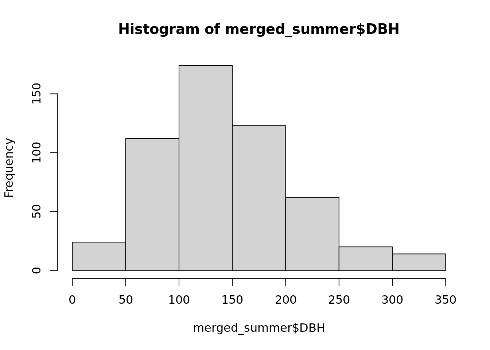
hist(merged_summer$Height)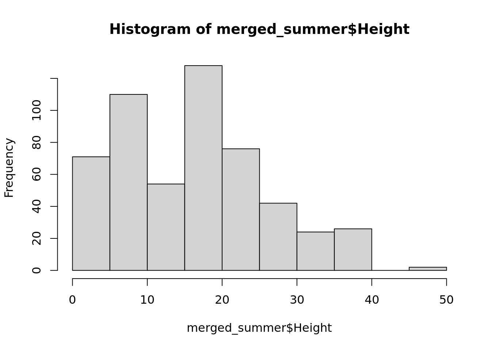
hist(merged_summer$WP)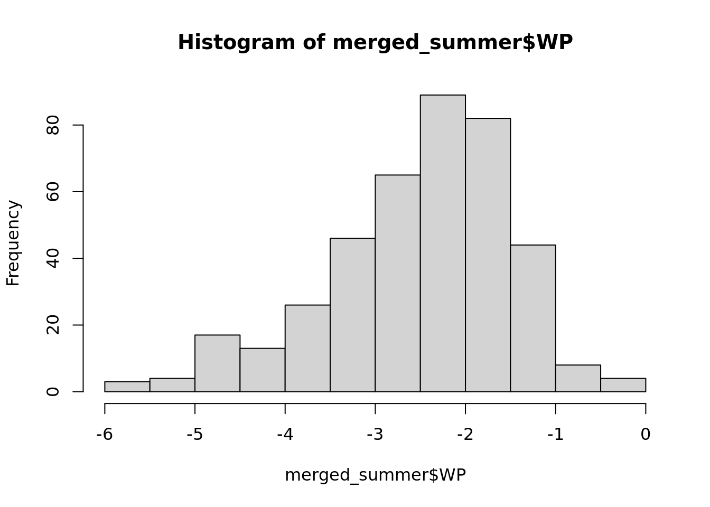
hist(merged_summer$LWC)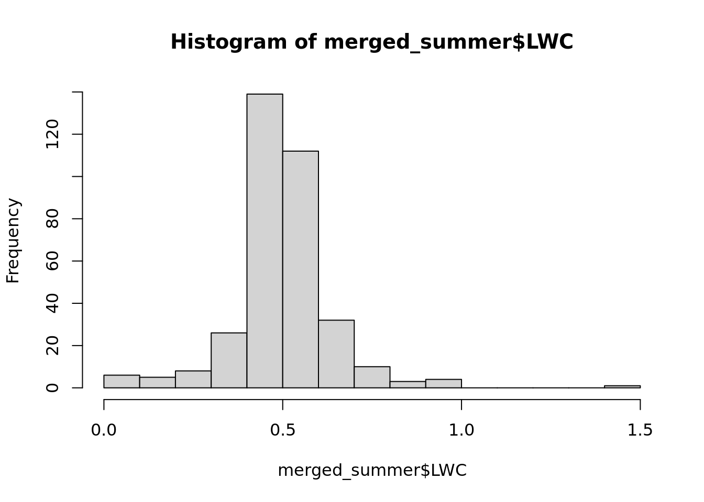
hist(merged_summer$RWC)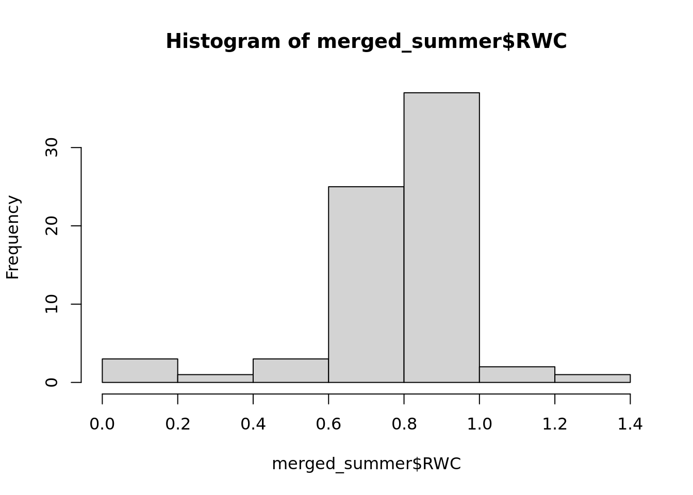
hist(merged_summer$LT)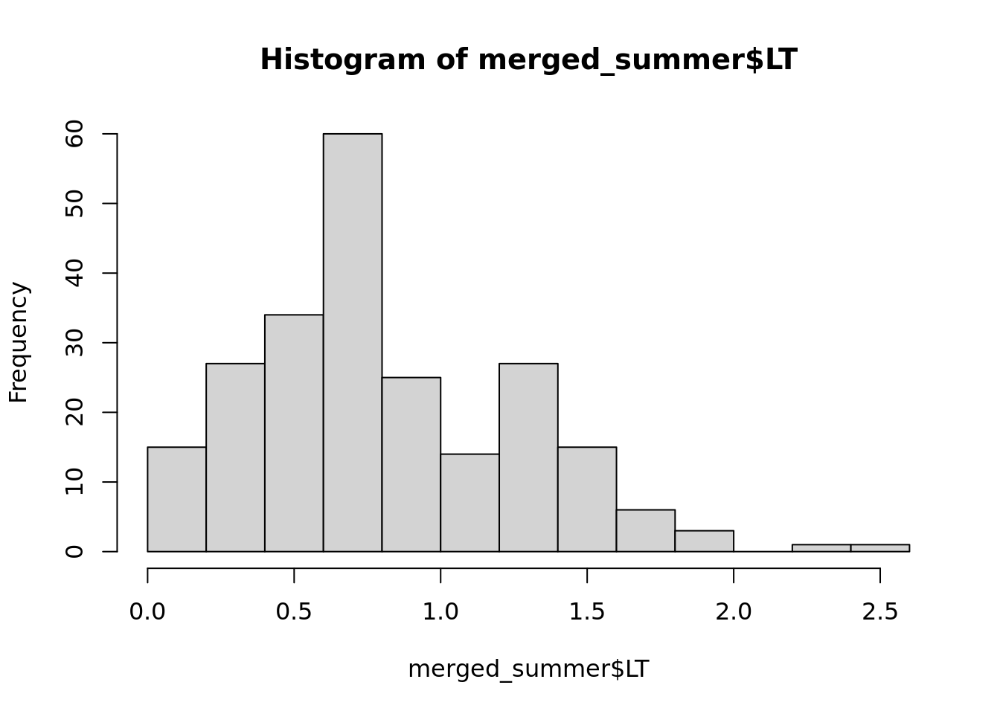
hist(merged_summer$LDMC)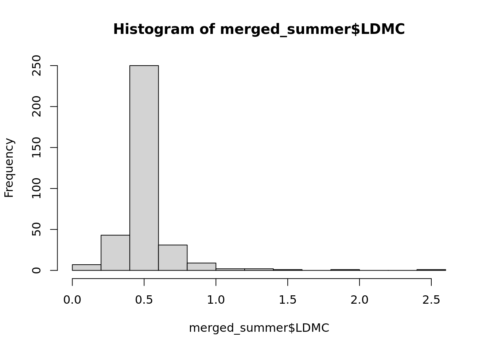
#boxplot boxplot(merged_summer$DBH)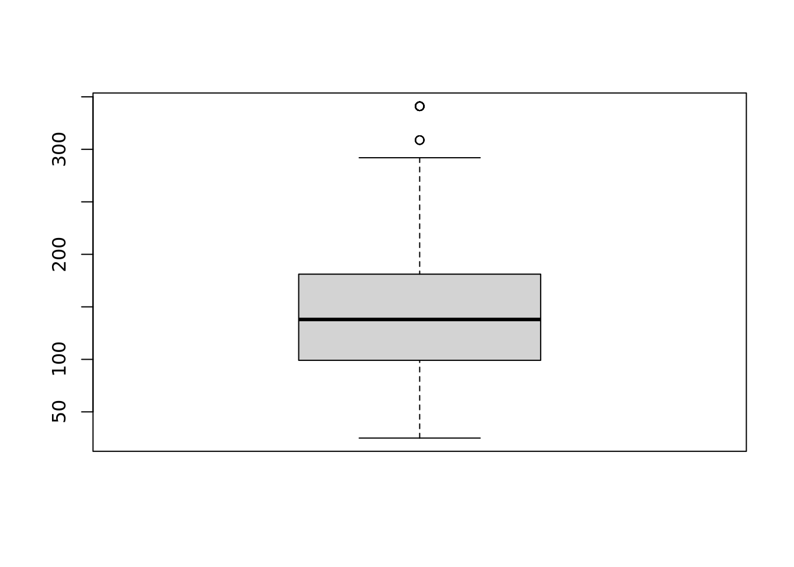
boxplot(merged_summer$Height)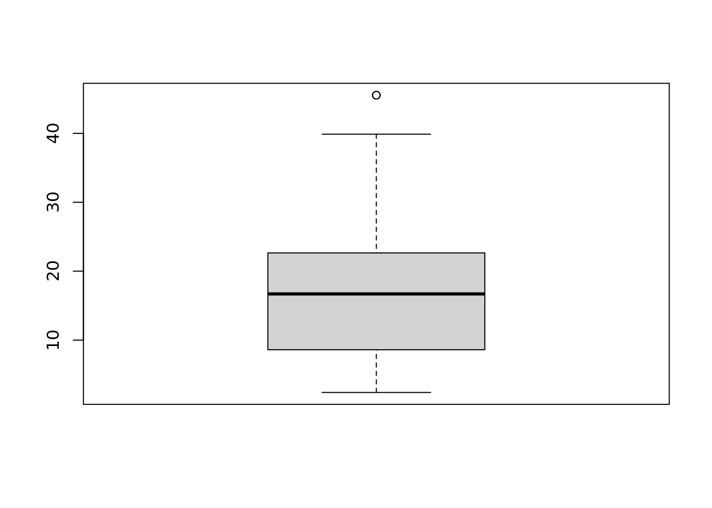
boxplot(merged_summer$WP)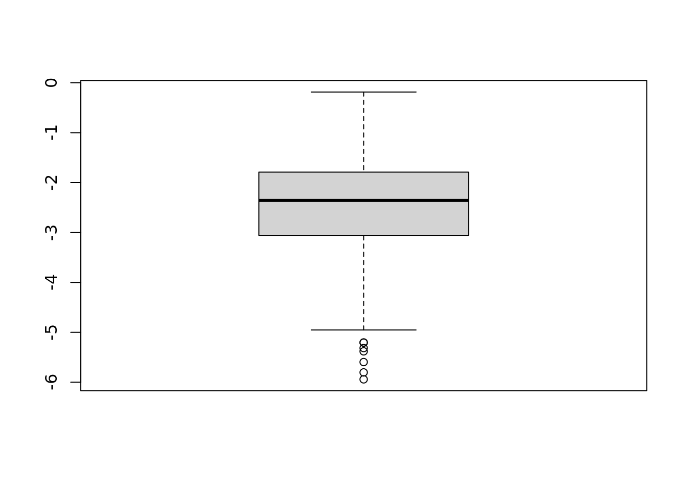
boxplot(merged_summer$LWC)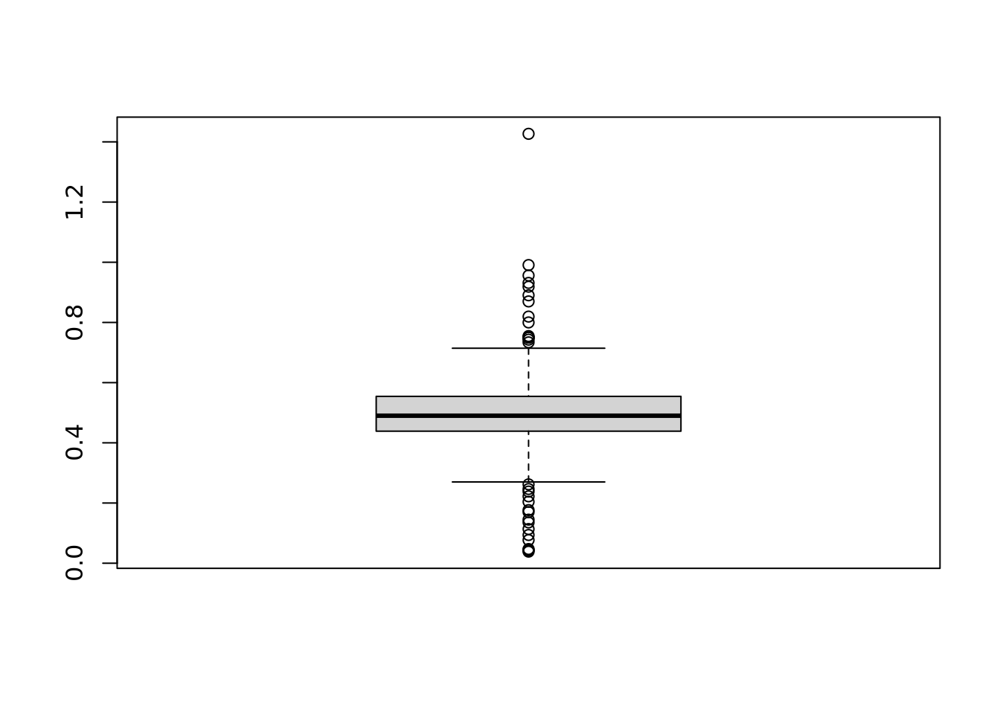
boxplot(merged_summer$RWC)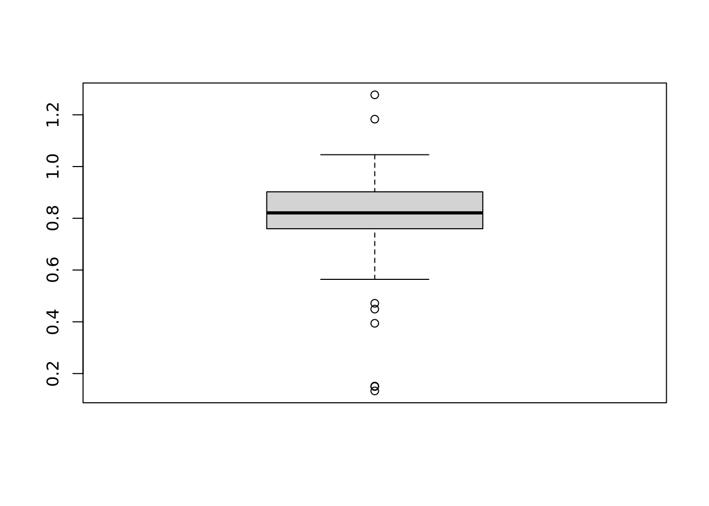
boxplot(merged_summer$LT)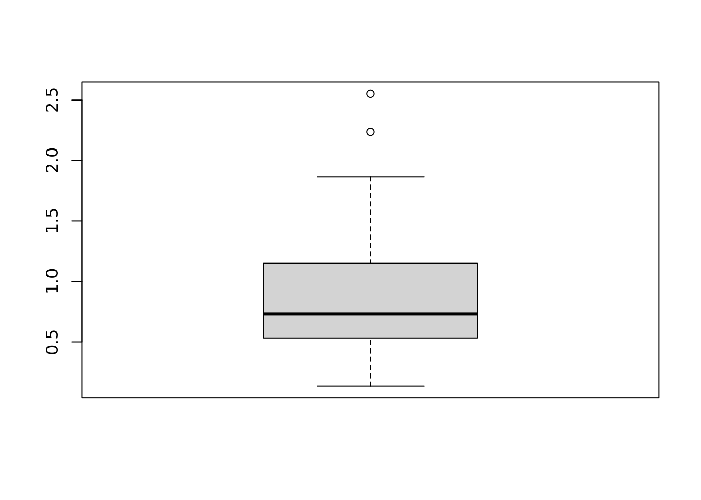
boxplot(merged_summer$LDMC)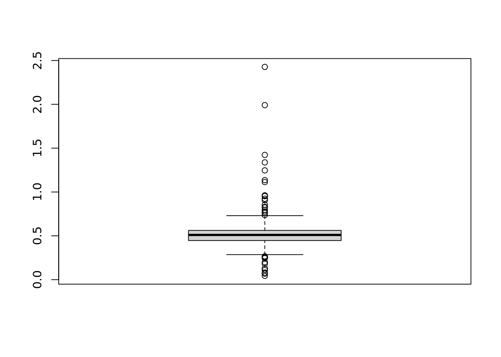
# Select only Dendro_number and Trend from trend_all trend_subset <- trend_all %>% select(Dendro_number, Trend, Slope) |> distinct() # Join Trend into merged_summer by matching dendrometer numbers merged_summer <- merged_summer %>% left_join(trend_subset, by = c("Dendrometer" = "Dendro_number")) merged_summer <- merged_summer %>% filter(!is.na(Trend)) %>% filter(Trend != "not enough data") length(unique(merged_summer$Dendrometer))[1] 73summary(merged_summer)PLOT Tree_name DBH Height Length:488 Length:488 Min. : 25.06 Min. : 2.400 Class :character Class :character 1st Qu.: 97.80 1st Qu.: 8.502 Mode :character Mode :character Median :135.75 Median :16.600 Mean :144.15 Mean :16.134 3rd Qu.:185.40 3rd Qu.:21.100 Max. :341.00 Max. :39.880 NA's :24 NA's :18 SP_CODE Stress_Level REPS Level Length:488 Min. : 0.000 Min. :1.00 Length:488 Class :character 1st Qu.: 6.000 1st Qu.:1.00 Class :character Mode :character Median : 9.000 Median :1.00 Mode :character Mean : 7.425 Mean :1.09 3rd Qu.:10.000 3rd Qu.:1.00 Max. :10.000 Max. :3.00 NA's :8 WP LWC RWC Time Min. :-5.942 Min. :0.03845 Min. :0.1328 Length:488 1st Qu.:-3.110 1st Qu.:0.43582 1st Qu.:0.7374 Class :character Median :-2.368 Median :0.49350 Median :0.7953 Mode :character Mean :-2.513 Mean :0.49624 Mean :0.7762 3rd Qu.:-1.744 3rd Qu.:0.55357 3rd Qu.:0.8786 Max. :-0.185 Max. :1.42683 Max. :1.2772 NA's :141 NA's :193 NA's :432 Year Dendrometer LDMC X Min. :2024 Min. :92240313 Min. :0.04398 Min. :-113.9 1st Qu.:2025 1st Qu.:92240375 1st Qu.:0.44822 1st Qu.:-111.7 Median :2025 Median :92246664 Median :0.51006 Median :-111.5 Mean :2025 Mean :92245496 Mean :0.52801 Mean :-111.5 3rd Qu.:2025 3rd Qu.:92248302 3rd Qu.:0.56459 3rd Qu.:-110.8 Max. :2025 Max. :92248330 Max. :2.42683 Max. :-109.2 NA's :192 Y LT Trend Slope Min. :32.37 Min. :0.1333 Length:488 Min. :-10.9455 1st Qu.:33.95 1st Qu.:0.5333 Class :character 1st Qu.: -1.1203 Median :34.96 Median :0.7333 Mode :character Median : -0.0304 Mean :34.47 Mean :0.8210 Mean : -0.8976 3rd Qu.:35.16 3rd Qu.:1.1167 3rd Qu.: 0.1357 Max. :35.53 Max. :2.5530 Max. : 5.6149 NA's :269# Summarise predictors by Year and Tree_name merged_summary <- merged_summer %>% group_by(Tree_name, Time, Year) %>% summarise( PLOT = first(PLOT), SP_CODE = first(SP_CODE), Trend = first(Trend), Slope = first(Slope), Stress_Level = first(Stress_Level), DBH = mean(DBH, na.rm = TRUE), Height = mean(Height, na.rm = TRUE), LWC = mean(LWC, na.rm = TRUE), RWC = mean(RWC, na.rm = TRUE), LT = mean(LT, na.rm = TRUE), WP = mean(WP, na.rm = TRUE), LDMC = mean(LDMC, na.rm = TRUE), .groups = "drop" ) ##scale all predictors ##scale the varaibes merged_summary <- merged_summary %>% mutate(across(c(LWC, LDMC, DBH, Height, RWC, LT, WP), ~scale(.), .names = "z_{.col}")) summary(merged_summary)Tree_name Time Year PLOT Length:191 Length:191 Min. :2024 Length:191 Class :character Class :character 1st Qu.:2025 Class :character Mode :character Mode :character Median :2025 Mode :character Mean :2025 3rd Qu.:2025 Max. :2025 SP_CODE Trend Slope Stress_Level Length:191 Length:191 Min. :-10.9455 Min. : 0.000 Class :character Class :character 1st Qu.: -1.1168 1st Qu.: 5.750 Mode :character Mode :character Median : -0.0304 Median : 9.000 Mean : -0.8277 Mean : 7.176 3rd Qu.: 0.1255 3rd Qu.:10.000 Max. : 5.6149 Max. :10.000 NA's :3 DBH Height LWC RWC Min. : 25.06 Min. : 2.40 Min. :0.04098 Min. :0.1422 1st Qu.: 93.25 1st Qu.: 7.80 1st Qu.:0.44358 1st Qu.:0.7531 Median :126.60 Median :16.55 Median :0.49937 Median :0.8077 Mean :138.00 Mean :15.69 Mean :0.49457 Mean :0.7762 3rd Qu.:168.50 3rd Qu.:21.00 3rd Qu.:0.55469 3rd Qu.:0.8501 Max. :341.00 Max. :39.88 Max. :0.89434 Max. :1.1614 NA's :12 NA's :9 NA's :54 NA's :163 LT WP LDMC z_LWC.V1 Min. :0.1333 Min. :-5.9420 Min. :0.1057 Min. :-3.64993 1st Qu.:0.5167 1st Qu.:-3.1265 1st Qu.:0.4535 1st Qu.:-0.41031 Median :0.7458 Median :-2.4370 Median :0.5068 Median : 0.03866 Mean :0.8403 Mean :-2.5804 Mean :0.5322 Mean : 0.00000 3rd Qu.:1.1875 3rd Qu.:-1.7770 3rd Qu.:0.5569 3rd Qu.: 0.48383 Max. :2.3952 Max. :-0.7464 Max. :1.7811 Max. : 3.21689 NA's :91 NA's :50 NA's :54 NA's :54 z_LDMC.V1 z_DBH.V1 z_Height.V1 z_RWC.V1 Min. :-2.10178 Min. :-1.794925 Min. :-1.413847 Min. :-3.06126 1st Qu.:-0.38785 1st Qu.:-0.711256 1st Qu.:-0.839313 1st Qu.:-0.11158 Median :-0.12515 Median :-0.181224 Median : 0.091645 Median : 0.15228 Mean : 0.00000 Mean : 0.000000 Mean : 0.000000 Mean : 0.00000 3rd Qu.: 0.12194 3rd Qu.: 0.484694 3rd Qu.: 0.565104 3rd Qu.: 0.35679 Max. : 6.15424 Max. : 3.226238 Max. : 2.573845 Max. : 1.85994 NA's :54 NA's :12 NA's :9 NA's :163 z_LT.V1 z_WP.V1 Min. :-1.58212 Min. :-3.11783 1st Qu.:-0.72428 1st Qu.:-0.50651 Median :-0.21163 Median : 0.13298 Mean : 0.00000 Mean : 0.00000 3rd Qu.: 0.77692 3rd Qu.: 0.74512 Max. : 3.47947 Max. : 1.70098 NA's :91 NA's :50# Remove rows with NAs in predictors model_data <- merged_summary %>% filter(!is.na(z_DBH) & !is.na(z_Height) & !is.na(z_LWC) & !is.na(z_WP) & !is.na(z_LDMC) & !is.na(Trend))Warning: Using one column matrices in `filter()` was deprecated in dplyr 1.1.0. ℹ Please use one dimensional logical vectors instead.summary(model_data)Tree_name Time Year PLOT Length:131 Length:131 Min. :2024 Length:131 Class :character Class :character 1st Qu.:2025 Class :character Mode :character Mode :character Median :2025 Mode :character Mean :2025 3rd Qu.:2025 Max. :2025 SP_CODE Trend Slope Stress_Level Length:131 Length:131 Min. :-10.94552 Min. : 0.000 Class :character Class :character 1st Qu.: -1.12385 1st Qu.: 7.000 Mode :character Mode :character Median : -0.03758 Median : 9.000 Mean : -0.92000 Mean : 7.809 3rd Qu.: 0.10061 3rd Qu.:10.000 Max. : 5.61494 Max. :10.000 DBH Height LWC RWC Min. : 33.20 Min. : 2.400 Min. :0.04485 Min. :0.1422 1st Qu.: 94.25 1st Qu.: 7.599 1st Qu.:0.44588 1st Qu.:0.7719 Median :125.20 Median :15.100 Median :0.49991 Median :0.8080 Mean :141.17 Mean :15.597 Mean :0.49860 Mean :0.7949 3rd Qu.:186.45 3rd Qu.:21.000 3rd Qu.:0.55120 3rd Qu.:0.8593 Max. :341.00 Max. :39.880 Max. :0.89434 Max. :1.1614 NA's :104 LT WP LDMC z_LWC.V1 Min. :0.1333 Min. :-5.9420 Min. :0.1057 Min. :-3.618804 1st Qu.:0.5167 1st Qu.:-3.1450 1st Qu.:0.4540 1st Qu.:-0.391803 Median :0.7347 Median :-2.4750 Median :0.5008 Median : 0.043046 Mean :0.8176 Mean :-2.6129 Mean :0.5294 Mean : 0.032432 3rd Qu.:1.1375 3rd Qu.:-1.8702 3rd Qu.:0.5565 3rd Qu.: 0.455754 Max. :2.3952 Max. :-0.7464 Max. :1.7811 Max. : 3.216893 NA's :41 z_LDMC.V1 z_DBH.V1 z_Height.V1 Min. :-2.101780 Min. :-1.665631 Min. :-1.4138467 1st Qu.:-0.385250 1st Qu.:-0.695362 1st Qu.:-0.8607088 Median :-0.154735 Median :-0.203474 Median :-0.0626279 Mean :-0.013819 Mean : 0.050304 Mean :-0.0097427 3rd Qu.: 0.119846 3rd Qu.: 0.769973 3rd Qu.: 0.5651036 Max. : 6.154242 Max. : 3.226238 Max. : 2.5738445 z_RWC.V1 z_LT.V1 z_WP.V1 Min. :-3.06126 Min. :-1.58212 Min. :-3.1178320 1st Qu.:-0.02093 1st Qu.:-0.72428 1st Qu.:-0.5236725 Median : 0.15356 Median :-0.23644 Median : 0.0977386 Mean : 0.09017 Mean :-0.05082 Mean :-0.0301594 3rd Qu.: 0.40137 3rd Qu.: 0.66503 3rd Qu.: 0.6586316 Max. : 1.85994 Max. : 3.47947 Max. : 1.7009792 NA's :104 NA's :41##linear model model_data$Stress_Level <- factor(model_data$Stress_Level, ordered = TRUE) lm_1 <- lm (Slope~z_WP + z_DBH + z_LWC + z_LDMC + z_Height + Stress_Level, data = model_data ) summary(lm_1)Call: lm(formula = Slope ~ z_WP + z_DBH + z_LWC + z_LDMC + z_Height + Stress_Level, data = model_data) Residuals: Min 1Q Median 3Q Max -8.7387 -0.5234 0.3980 1.2524 6.6947 Coefficients: Estimate Std. Error t value Pr(>|t|) (Intercept) -0.85233 0.38840 -2.194 0.0302 * z_WP -0.14582 0.33121 -0.440 0.6606 z_DBH -0.21567 0.32999 -0.654 0.5147 z_LWC -0.20248 0.28119 -0.720 0.4729 z_LDMC 0.21020 0.26290 0.800 0.4256 z_Height 0.37713 0.36792 1.025 0.3075 Stress_Level.L 0.64493 1.52850 0.422 0.6739 Stress_Level.Q -2.31017 1.58318 -1.459 0.1472 Stress_Level.C 2.83230 1.44372 1.962 0.0522 . Stress_Level^4 -1.30083 1.38209 -0.941 0.3486 Stress_Level^5 -0.70388 1.09876 -0.641 0.5230 Stress_Level^6 0.18556 1.06995 0.173 0.8626 Stress_Level^7 0.48147 1.03916 0.463 0.6440 Stress_Level^8 2.03206 1.10397 1.841 0.0682 . Stress_Level^9 0.01823 1.01117 0.018 0.9856 Stress_Level^10 -0.23446 1.23857 -0.189 0.8502 --- Signif. codes: 0 '***' 0.001 '**' 0.01 '*' 0.05 '.' 0.1 ' ' 1 Residual standard error: 2.503 on 115 degrees of freedom Multiple R-squared: 0.117, Adjusted R-squared: 0.00185 F-statistic: 1.016 on 15 and 115 DF, p-value: 0.444H1
gls_1 <- gls(Slope~z_WP + z_DBH + z_LWC + z_LDMC + z_Height + Stress_Level, data = model_data ) #summary(gls_1) M1.nested <- lme( fixed = Slope ~ z_WP + z_DBH + z_LWC + z_LDMC + z_Height + Stress_Level, random = ~1 | PLOT / SP_CODE, # nested random effects: SPECIES within PLOT data = model_data, method = "REML" ) #summary(M1.nested) #compare new (model with variance by species and plot) and old model (model without any variance structure) anova(gls_1, M1.nested)Model df AIC BIC logLik Test L.Ratio p-value gls_1 1 17 617.3230 663.9868 -291.6615 M1.nested 2 19 575.4121 627.5658 -268.7061 1 vs 2 45.91086 <.0001#Random slopes for species M1.species= lme(Slope ~ z_WP + z_DBH + z_LWC + z_LDMC + z_Height + Stress_Level, random=~1|SP_CODE, data = model_data, method="REML") #summary(M1.species) #for plots instead M1.plot <- lme(Slope ~ z_WP + z_DBH + z_LWC + z_LDMC + z_Height + Stress_Level, random=~1|PLOT, data = model_data, method="REML") #summary(M1.plot) anova(gls_1, M1.nested, M1.species, M1.plot)Model df AIC BIC logLik Test L.Ratio p-value gls_1 1 17 617.3230 663.9868 -291.6615 M1.nested 2 19 575.4121 627.5658 -268.7061 1 vs 2 45.91086 <.0001 M1.species 3 18 592.2491 641.6578 -278.1245 2 vs 3 18.83693 <.0001 M1.plot 4 18 602.1540 651.5628 -283.0770Perform Model Selection
Use model selection criteria (e.g., AIC, delta AIC, likelihood ratio tests) to justify your top model
This can include identifying the best random structure and the best fixed structure.
#summary(M1.nested) lme1_ml <- update(M1.nested, method = "ML") drop1(lme1_ml, test = "Chisq")Single term deletions Model: Slope ~ z_WP + z_DBH + z_LWC + z_LDMC + z_Height + Stress_Level Df AIC LRT Pr(>Chi) <none> 583.66 z_WP 1 582.79 1.1310 0.28756 z_DBH 1 581.71 0.0483 0.82597 z_LWC 1 586.04 4.3814 0.03633 * z_LDMC 1 582.19 0.5317 0.46589 z_Height 1 583.33 1.6641 0.19706 Stress_Level 10 583.62 19.9554 0.02968 * --- Signif. codes: 0 '***' 0.001 '**' 0.01 '*' 0.05 '.' 0.1 ' ' 1#Refit with REML and validate #After selecting the optimal fixed structure, refit the model using REML for final coefficient estimates. lme_final <- update(M1.nested, fixed = Slope ~ z_LWC + Stress_Level, method = "REML") summary(lme_final)Linear mixed-effects model fit by REML Data: model_data AIC BIC logLik 568.1575 609.8444 -269.0788 Random effects: Formula: ~1 | PLOT (Intercept) StdDev: 0.9487889 Formula: ~1 | SP_CODE %in% PLOT (Intercept) Residual StdDev: 1.892091 1.684395 Fixed effects: Slope ~ z_LWC + Stress_Level Value Std.Error DF t-value p-value (Intercept) -0.878543 0.5606657 92 -1.5669633 0.1206 z_LWC -0.401715 0.1945960 92 -2.0643557 0.0418 Stress_Level.L 0.143333 1.0972991 92 0.1306238 0.8964 Stress_Level.Q -2.012433 1.1957143 92 -1.6830383 0.0958 Stress_Level.C 3.165308 1.1023298 92 2.8714709 0.0051 Stress_Level^4 -2.210275 1.0204341 92 -2.1660140 0.0329 Stress_Level^5 0.082436 0.8321280 92 0.0990669 0.9213 Stress_Level^6 -0.597546 0.7789807 92 -0.7670865 0.4450 Stress_Level^7 0.939659 0.7963151 92 1.1800091 0.2410 Stress_Level^8 1.126472 0.8096409 92 1.3913235 0.1675 Stress_Level^9 -0.833390 0.8308338 92 -1.0030764 0.3185 Stress_Level^10 -0.023243 0.9868006 92 -0.0235537 0.9813 Correlation: (Intr) z_LWC St_L.L St_L.Q St_L.C St_L^4 St_L^5 St_L^6 St_L^7 z_LWC 0.125 Stress_Level.L -0.357 -0.320 Stress_Level.Q 0.129 0.244 -0.652 Stress_Level.C -0.162 -0.260 0.433 -0.723 Stress_Level^4 0.216 0.322 -0.469 0.365 -0.632 Stress_Level^5 -0.182 -0.297 0.446 -0.341 0.328 -0.579 Stress_Level^6 0.028 0.180 -0.281 0.350 -0.237 0.105 -0.400 Stress_Level^7 -0.063 -0.103 0.174 -0.197 0.147 0.025 -0.079 -0.299 Stress_Level^8 0.084 0.067 -0.026 -0.008 -0.097 0.113 0.059 -0.123 -0.308 Stress_Level^9 -0.081 0.000 0.029 0.079 0.006 -0.138 0.126 0.090 -0.118 Stress_Level^10 -0.001 -0.030 -0.016 -0.064 0.054 -0.019 -0.096 0.111 0.101 St_L^8 St_L^9 z_LWC Stress_Level.L Stress_Level.Q Stress_Level.C Stress_Level^4 Stress_Level^5 Stress_Level^6 Stress_Level^7 Stress_Level^8 Stress_Level^9 -0.237 Stress_Level^10 -0.183 -0.387 Standardized Within-Group Residuals: Min Q1 Med Q3 Max -3.13567316 -0.42536427 0.04408892 0.42943001 2.92369987 Number of Observations: 131 Number of Groups: PLOT SP_CODE %in% PLOT 11 28Create a Representative Figure of Your Model (5 points)
Include a figure that effectively communicates a key model result.
Examples: regression plot with CI, coefficient plot, or fitted vs. observed.
Ensure the figure includes a descriptive caption, clear axis labels, and appropriate units.
tab_model(lme_final, show.se=TRUE)| Slope | ||||
|---|---|---|---|---|
| Predictors | Estimates | std. Error | CI | p |
| (Intercept) | -0.88 | 0.56 | -1.99 – 0.23 | 0.121 |
| z LWC | -0.40 | 0.19 | -0.79 – -0.02 | 0.042 |
| Stress Level [linear] | 0.14 | 1.10 | -2.04 – 2.32 | 0.896 |
| Stress Level [quadratic] | -2.01 | 1.20 | -4.39 – 0.36 | 0.096 |
| Stress Level [cubic] | 3.17 | 1.10 | 0.98 – 5.35 | 0.005 |
| Stress Level [4th degree] | -2.21 | 1.02 | -4.24 – -0.18 | 0.033 |
| Stress Level [5th degree] | 0.08 | 0.83 | -1.57 – 1.74 | 0.921 |
| Stress Level [6th degree] | -0.60 | 0.78 | -2.14 – 0.95 | 0.445 |
| Stress Level [7th degree] | 0.94 | 0.80 | -0.64 – 2.52 | 0.241 |
| Stress Level [8th degree] | 1.13 | 0.81 | -0.48 – 2.73 | 0.167 |
| Stress Level [9th degree] | -0.83 | 0.83 | -2.48 – 0.82 | 0.318 |
| Stress Level [10th degree] |
-0.02 | 0.99 | -1.98 – 1.94 | 0.981 |
| Random Effects | ||||
| σ2 | 2.84 | |||
| τ00 SP_CODE | 0.95 | |||
| τ00 PLOT | 1.89 | |||
| ICC | 0.50 | |||
| N SP_CODE | 13 | |||
| N PLOT | 11 | |||
| Observations | 131 | |||
| Marginal R2 / Conditional R2 | 0.104 / 0.552 | |||
check_model(lme_final)Converting missing values (`NA`) into regular values currently not
possible for variables of class `NULL`.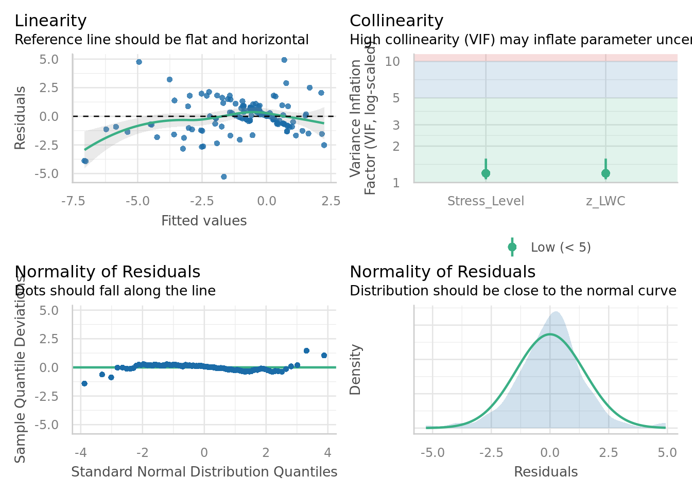
# Get predicted values from the model for danger
pred <- ggeffects::ggpredict(lme_final, terms = "z_LWC")
# Plot predictions with confidence intervals
plot(pred, show_data = TRUE) +
labs(x = "LWC (g)",
y = "Predicted change in TWD (De_trend slope)",
title = "Predicted relationship between LWC and TWD") +
theme_minimal()Data points may overlap. Use the `jitter` argument to add some amount of
random variation to the location of data points and avoid overplotting.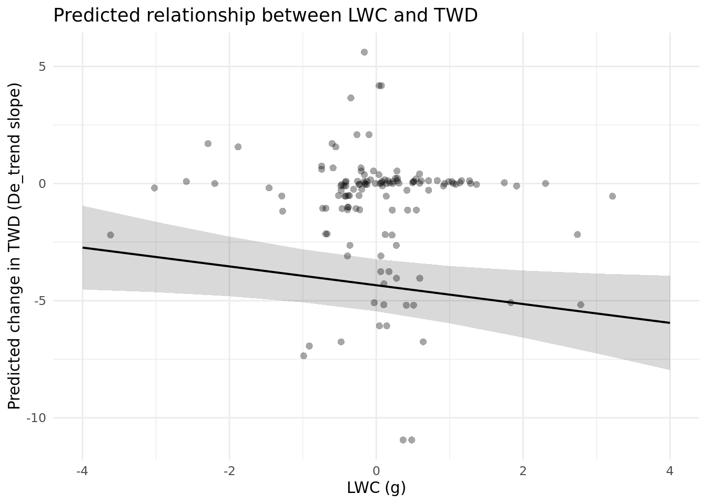
- Evaluate Model Assumptions (10 points)
Use residual plots, QQ plots, or other diagnostics to assess model assumptions.
Discuss any violations and how you addressed them.
#full model with all fixed and random effects
#Check for assumption violations:
#- Homogeneity of residuals.
#- Normality.
#- Outliers.
plot(resid(M1.nested) ~ model_data$z_LWC, xlab = "LWC", ylab = "Normalized residuals")+abline(h = 0, lty = 2)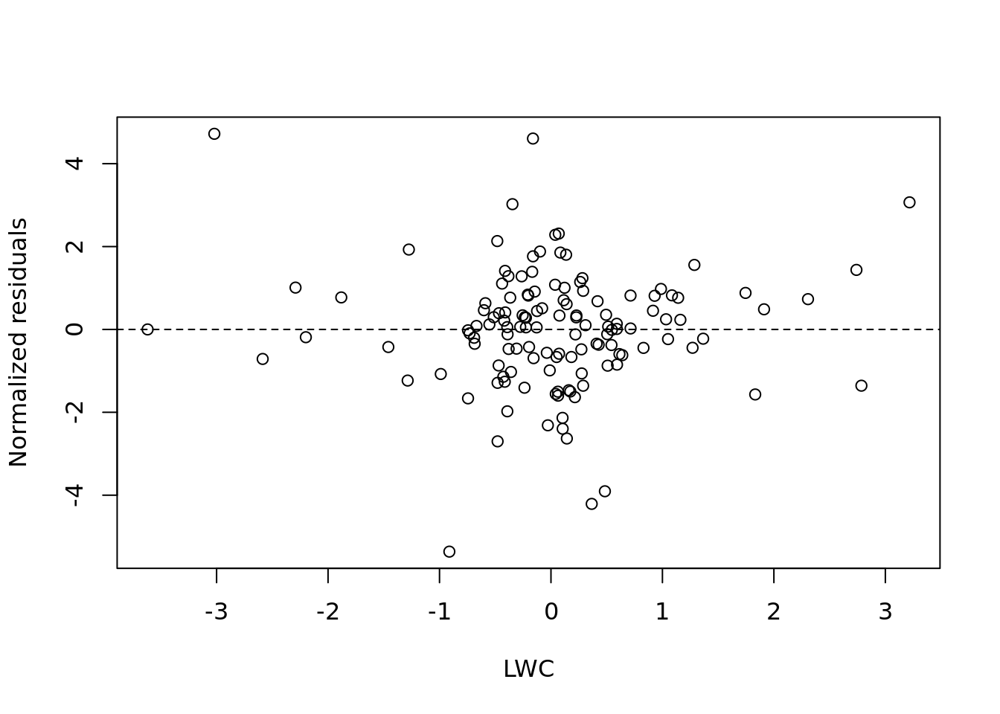
integer(0)plot(M1.nested)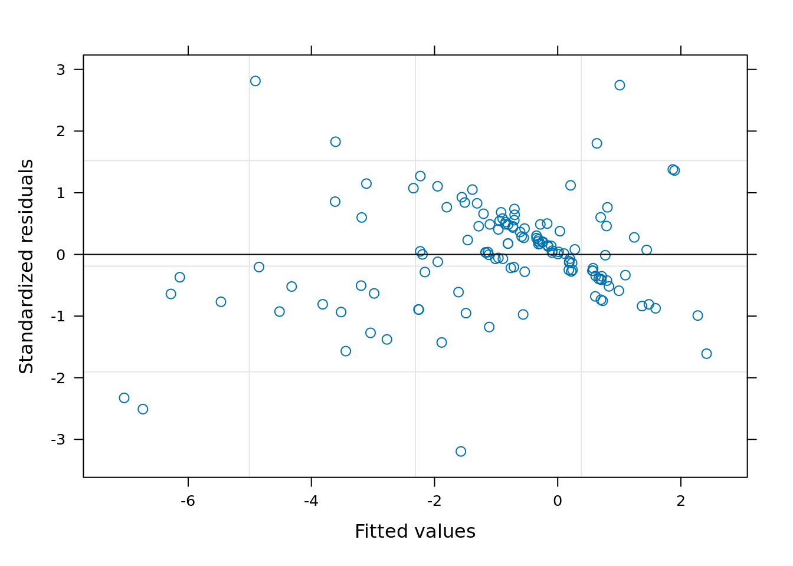
check_model(M1.nested)Converting missing values (`NA`) into regular values currently not
possible for variables of class `NULL`.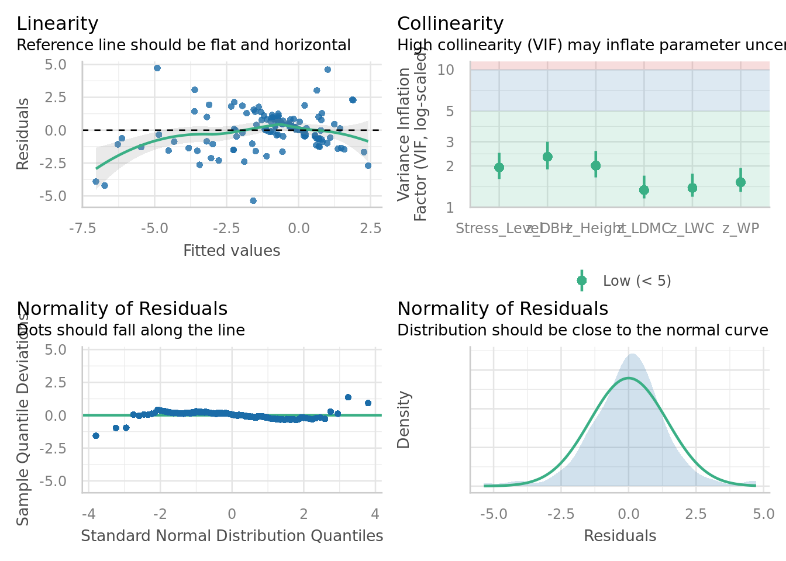
##model from model selection
#Check for assumption violations:
#- Homogeneity of residuals.
#- Normality.
#- Outliers.
plot(lme_final)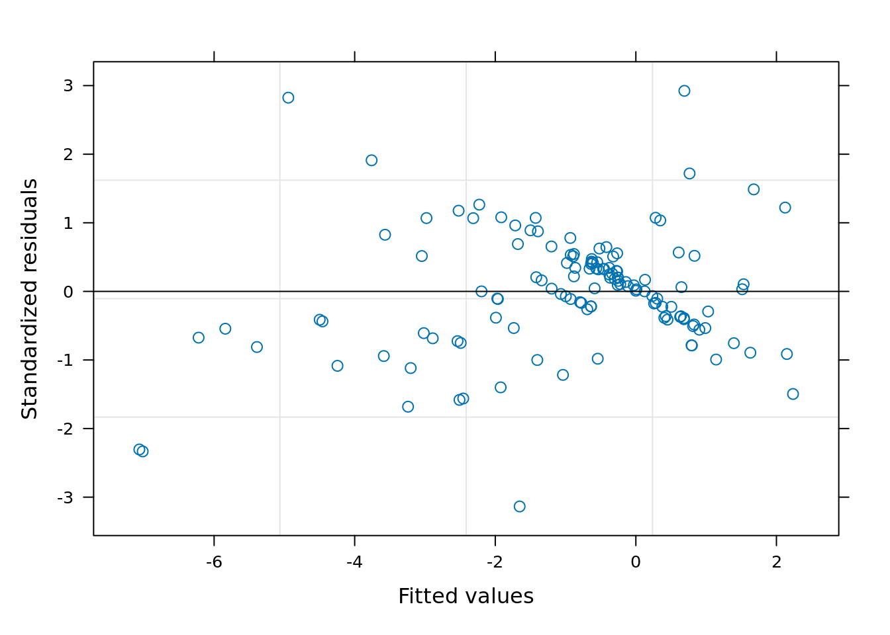
check_model(lme_final)Converting missing values (`NA`) into regular values currently not
possible for variables of class `NULL`.H2
gls_2 <- gls(Slope~z_WP + z_DBH + z_LWC + z_LDMC + z_Height + Stress_Level + SP_CODE, data = model_data )
#summary(gls_2)
M1.Tree_random <- lme(
Slope ~ z_WP + z_DBH + z_LWC + z_LDMC + z_Height + Stress_Level + SP_CODE,
random = ~1 | PLOT,
method = "REML",
na.action = na.omit,
data = model_data
)
summary(M1.Tree_random)Linear mixed-effects model fit by REML
Data: model_data
AIC BIC logLik
543.8564 622.8983 -241.9282
Random effects:
Formula: ~1 | PLOT
(Intercept) Residual
StdDev: 1.561383 1.760033
Fixed effects: Slope ~ z_WP + z_DBH + z_LWC + z_LDMC + z_Height + Stress_Level + SP_CODE
Value Std.Error DF t-value p-value
(Intercept) 0.944266 1.0527730 93 0.896932 0.3721
z_WP -0.177178 0.2772530 93 -0.639048 0.5244
z_DBH -0.196764 0.3449347 93 -0.570437 0.5698
z_LWC -0.464249 0.2178888 93 -2.130670 0.0358
z_LDMC -0.090970 0.2121304 93 -0.428839 0.6690
z_Height 0.546729 0.5092958 93 1.073500 0.2858
Stress_Level.L -0.058386 1.2008149 93 -0.048622 0.9613
Stress_Level.Q -0.416462 1.2223394 93 -0.340709 0.7341
Stress_Level.C 2.803727 1.1302292 93 2.480672 0.0149
Stress_Level^4 -2.616383 1.1160575 93 -2.344308 0.0212
Stress_Level^5 0.341346 0.9128710 93 0.373926 0.7093
Stress_Level^6 -0.892687 0.8269677 93 -1.079470 0.2832
Stress_Level^7 1.089706 0.8369575 93 1.301985 0.1961
Stress_Level^8 1.256625 0.8755606 93 1.435223 0.1546
Stress_Level^9 -0.477514 0.9508650 93 -0.502189 0.6167
Stress_Level^10 -0.866428 1.0925846 93 -0.793008 0.4298
SP_CODEABLA -1.394995 2.2289410 93 -0.625855 0.5329
SP_CODEJUMO -0.833126 1.8325725 93 -0.454621 0.6504
SP_CODEJUOS -3.761654 1.4689662 93 -2.560749 0.0121
SP_CODEPIED -1.723731 1.8550881 93 -0.929191 0.3552
SP_CODEPILE 2.227317 2.2386750 93 0.994926 0.3224
SP_CODEPIPO -3.521620 1.0243140 93 -3.438028 0.0009
SP_CODEPIPU 0.293784 1.2168260 93 0.241435 0.8097
SP_CODEPIST -2.798865 1.1377903 93 -2.459913 0.0157
SP_CODEPSME 1.314046 1.0009178 93 1.312841 0.1925
SP_CODEQUEM -6.373711 1.6634415 93 -3.831641 0.0002
SP_CODEQUGA -0.581584 1.2551805 93 -0.463347 0.6442
SP_CODEQUHY -0.980032 1.5879019 93 -0.617187 0.5386
Correlation:
(Intr) z_WP z_DBH z_LWC z_LDMC z_Hght St_L.L St_L.Q St_L.C
z_WP -0.089
z_DBH 0.207 -0.063
z_LWC 0.018 -0.198 0.053
z_LDMC 0.009 0.326 0.030 0.200
z_Height -0.377 -0.154 -0.659 -0.021 -0.102
Stress_Level.L -0.193 -0.094 -0.236 -0.263 0.044 0.168
Stress_Level.Q -0.018 0.065 -0.066 0.168 -0.044 0.064 -0.590
Stress_Level.C -0.123 -0.146 -0.037 -0.204 0.031 0.105 0.422 -0.695
Stress_Level^4 0.134 0.150 0.167 0.284 -0.016 -0.176 -0.505 0.284 -0.609
Stress_Level^5 -0.066 -0.138 0.021 -0.239 0.065 0.058 0.441 -0.267 0.312
Stress_Level^6 -0.087 -0.022 -0.053 0.150 -0.026 0.034 -0.231 0.345 -0.229
Stress_Level^7 -0.006 -0.050 0.005 -0.070 0.030 -0.033 0.145 -0.255 0.183
Stress_Level^8 -0.022 0.101 -0.261 0.015 0.002 0.152 0.038 -0.003 -0.084
Stress_Level^9 -0.278 0.086 -0.047 -0.082 0.043 0.105 0.072 0.137 -0.004
Stress_Level^10 0.108 -0.101 0.011 0.041 -0.047 -0.001 -0.054 -0.071 0.021
SP_CODEABLA -0.069 0.094 0.158 0.061 0.007 -0.111 0.037 0.038 -0.213
SP_CODEJUMO -0.662 0.128 -0.314 0.006 -0.102 0.496 -0.025 0.071 0.039
SP_CODEJUOS -0.739 0.238 -0.251 0.035 0.031 0.460 -0.022 0.164 -0.010
SP_CODEPIED -0.541 -0.073 -0.018 0.127 -0.089 0.302 -0.093 0.045 0.046
SP_CODEPILE -0.418 0.044 -0.012 -0.171 0.062 0.244 0.157 0.199 -0.034
SP_CODEPIPO -0.735 0.117 -0.139 0.080 -0.006 0.177 -0.029 0.020 0.074
SP_CODEPIPU -0.370 0.027 0.101 -0.068 0.019 0.091 0.030 0.080 0.024
SP_CODEPIST -0.325 0.032 0.223 0.003 0.023 0.002 -0.075 -0.066 0.000
SP_CODEPSME -0.354 0.111 0.210 0.005 0.040 -0.146 -0.080 -0.028 0.005
SP_CODEQUEM -0.445 0.041 0.058 0.078 -0.008 0.270 0.067 -0.013 -0.038
SP_CODEQUGA -0.699 0.189 -0.154 0.026 0.034 0.335 -0.085 0.098 0.041
SP_CODEQUHY -0.467 0.019 0.084 0.030 0.006 0.290 -0.055 0.029 0.071
St_L^4 St_L^5 St_L^6 St_L^7 St_L^8 St_L^9 S_L^10 SP_CODEA
z_WP
z_DBH
z_LWC
z_LDMC
z_Height
Stress_Level.L
Stress_Level.Q
Stress_Level.C
Stress_Level^4
Stress_Level^5 -0.617
Stress_Level^6 0.095 -0.370
Stress_Level^7 0.039 -0.099 -0.312
Stress_Level^8 0.053 0.042 -0.106 -0.321
Stress_Level^9 -0.193 0.195 0.103 -0.169 -0.192
Stress_Level^10 0.062 -0.179 0.083 0.170 -0.163 -0.489
SP_CODEABLA 0.098 0.082 -0.129 -0.044 0.186 -0.198 0.170
SP_CODEJUMO 0.001 -0.057 0.069 -0.030 0.089 0.170 -0.044 0.007
SP_CODEJUOS 0.009 -0.078 0.134 0.016 -0.001 0.322 -0.155 0.005
SP_CODEPIED 0.039 -0.042 0.038 -0.058 -0.045 0.092 -0.024 0.029
SP_CODEPILE -0.277 0.344 0.102 -0.299 0.048 0.498 -0.455 0.017
SP_CODEPIPO -0.012 -0.088 0.091 -0.003 0.077 0.204 -0.048 0.066
SP_CODEPIPU -0.132 0.058 0.009 -0.055 0.081 0.300 -0.144 0.243
SP_CODEPIST 0.056 0.039 0.055 -0.002 -0.061 0.089 0.017 0.232
SP_CODEPSME 0.029 -0.044 0.036 0.007 -0.087 0.028 -0.067 0.157
SP_CODEQUEM 0.162 -0.149 0.262 -0.090 0.062 0.044 -0.013 0.113
SP_CODEQUGA 0.065 -0.120 0.131 0.048 -0.050 0.258 -0.073 -0.004
SP_CODEQUHY 0.037 0.030 0.089 0.031 0.011 0.155 -0.043 0.081
SP_CODEJUM SP_CODEJUO SP_CODEPIE SP_CODEPIL SP_CODEPIPO
z_WP
z_DBH
z_LWC
z_LDMC
z_Height
Stress_Level.L
Stress_Level.Q
Stress_Level.C
Stress_Level^4
Stress_Level^5
Stress_Level^6
Stress_Level^7
Stress_Level^8
Stress_Level^9
Stress_Level^10
SP_CODEABLA
SP_CODEJUMO
SP_CODEJUOS 0.594
SP_CODEPIED 0.784 0.437
SP_CODEPILE 0.244 0.391 0.198
SP_CODEPIPO 0.508 0.766 0.416 0.279
SP_CODEPIPU 0.220 0.312 0.199 0.352 0.319
SP_CODEPIST 0.209 0.283 0.241 0.248 0.342
SP_CODEPSME 0.181 0.302 0.220 0.302 0.448
SP_CODEQUEM 0.332 0.435 0.307 0.332 0.384
SP_CODEQUGA 0.544 0.753 0.429 0.293 0.729
SP_CODEQUHY 0.366 0.478 0.338 0.381 0.422
SP_CODEPIPU SP_CODEPIS SP_CODEPS SP_CODEQUE SP_CODEQUG
z_WP
z_DBH
z_LWC
z_LDMC
z_Height
Stress_Level.L
Stress_Level.Q
Stress_Level.C
Stress_Level^4
Stress_Level^5
Stress_Level^6
Stress_Level^7
Stress_Level^8
Stress_Level^9
Stress_Level^10
SP_CODEABLA
SP_CODEJUMO
SP_CODEJUOS
SP_CODEPIED
SP_CODEPILE
SP_CODEPIPO
SP_CODEPIPU
SP_CODEPIST 0.444
SP_CODEPSME 0.308 0.469
SP_CODEQUEM 0.254 0.375 0.419
SP_CODEQUGA 0.280 0.299 0.321 0.399
SP_CODEQUHY 0.311 0.408 0.438 0.528 0.448
Standardized Within-Group Residuals:
Min Q1 Med Q3 Max
-2.781376177 -0.451811061 -0.002023604 0.450390194 2.734261406
Number of Observations: 131
Number of Groups: 11 tab_model(M1.Tree_random)| Slope | |||
|---|---|---|---|
| Predictors | Estimates | CI | p |
| (Intercept) | 0.94 | -1.15 – 3.03 | 0.372 |
| z WP | -0.18 | -0.73 – 0.37 | 0.524 |
| z DBH | -0.20 | -0.88 – 0.49 | 0.570 |
| z LWC | -0.46 | -0.90 – -0.03 | 0.036 |
| z LDMC | -0.09 | -0.51 – 0.33 | 0.669 |
| z Height | 0.55 | -0.46 – 1.56 | 0.286 |
| Stress Level [linear] | -0.06 | -2.44 – 2.33 | 0.961 |
| Stress Level [quadratic] | -0.42 | -2.84 – 2.01 | 0.734 |
| Stress Level [cubic] | 2.80 | 0.56 – 5.05 | 0.015 |
| Stress Level [4th degree] | -2.62 | -4.83 – -0.40 | 0.021 |
| Stress Level [5th degree] | 0.34 | -1.47 – 2.15 | 0.709 |
| Stress Level [6th degree] | -0.89 | -2.53 – 0.75 | 0.283 |
| Stress Level [7th degree] | 1.09 | -0.57 – 2.75 | 0.196 |
| Stress Level [8th degree] | 1.26 | -0.48 – 3.00 | 0.155 |
| Stress Level [9th degree] | -0.48 | -2.37 – 1.41 | 0.617 |
| Stress Level [10th degree] |
-0.87 | -3.04 – 1.30 | 0.430 |
| SP CODE [ABLA] | -1.39 | -5.82 – 3.03 | 0.533 |
| SP CODE [JUMO] | -0.83 | -4.47 – 2.81 | 0.650 |
| SP CODE [JUOS] | -3.76 | -6.68 – -0.84 | 0.012 |
| SP CODE [PIED] | -1.72 | -5.41 – 1.96 | 0.355 |
| SP CODE [PILE] | 2.23 | -2.22 – 6.67 | 0.322 |
| SP CODE [PIPO] | -3.52 | -5.56 – -1.49 | 0.001 |
| SP CODE [PIPU] | 0.29 | -2.12 – 2.71 | 0.810 |
| SP CODE [PIST] | -2.80 | -5.06 – -0.54 | 0.016 |
| SP CODE [PSME] | 1.31 | -0.67 – 3.30 | 0.192 |
| SP CODE [QUEM] | -6.37 | -9.68 – -3.07 | <0.001 |
| SP CODE [QUGA] | -0.58 | -3.07 – 1.91 | 0.644 |
| SP CODE [QUHY] | -0.98 | -4.13 – 2.17 | 0.539 |
| Random Effects | |||
| σ2 | 3.10 | ||
| τ00 PLOT | 2.44 | ||
| ICC | 0.44 | ||
| N PLOT | 11 | ||
| Observations | 131 | ||
| Marginal R2 / Conditional R2 | 0.406 / 0.668 | ||
#compare new (model with variance by species and plot) and old model (model without any variance structure)
anova(gls_2, M1.Tree_random) Model df AIC BIC logLik Test L.Ratio p-value
gls_2 1 29 553.9536 630.3607 -247.9768
M1.Tree_random 2 30 543.8564 622.8983 -241.9282 1 vs 2 12.09715 5e-04- Check model selection
#summary(M1.nested)
lme2_ml <- update(M1.Tree_random, method = "ML")
drop1(lme2_ml, test = "Chisq")Single term deletions
Model:
Slope ~ z_WP + z_DBH + z_LWC + z_LDMC + z_Height + Stress_Level +
SP_CODE
Df AIC LRT Pr(>Chi)
<none> 573.07
z_WP 1 571.51 0.439 0.50756
z_DBH 1 571.62 0.550 0.45841
z_LWC 1 576.48 5.407 0.02006 *
z_LDMC 1 571.27 0.195 0.65847
z_Height 1 572.50 1.427 0.23220
Stress_Level 10 577.22 24.147 0.00722 **
SP_CODE 12 613.83 64.757 3.023e-09 ***
---
Signif. codes: 0 '***' 0.001 '**' 0.01 '*' 0.05 '.' 0.1 ' ' 1#Refit with REML and validate
#After selecting the optimal fixed structure, refit the model using REML for final coefficient estimates.
lme_final_2 <- update(M1.Tree_random, fixed = Slope ~ z_LWC + Stress_Level + SP_CODE,
method = "REML")
summary(lme_final_2)Linear mixed-effects model fit by REML
Data: model_data
AIC BIC logLik
534.68 604.1736 -241.34
Random effects:
Formula: ~1 | PLOT
(Intercept) Residual
StdDev: 1.479929 1.743637
Fixed effects: Slope ~ z_LWC + Stress_Level + SP_CODE
Value Std.Error DF t-value p-value
(Intercept) 1.254866 0.9285367 97 1.351444 0.1797
z_LWC -0.468199 0.2024155 97 -2.313058 0.0228
Stress_Level.L -0.302639 1.1424828 97 -0.264896 0.7917
Stress_Level.Q -0.454324 1.2017747 97 -0.378044 0.7062
Stress_Level.C 2.637033 1.0983781 97 2.400843 0.0183
Stress_Level^4 -2.364060 1.0697474 97 -2.209924 0.0295
Stress_Level^5 0.234177 0.8870403 97 0.263998 0.7923
Stress_Level^6 -0.926625 0.8173226 97 -1.133733 0.2597
Stress_Level^7 1.103694 0.8257853 97 1.336539 0.1845
Stress_Level^8 1.168107 0.8333791 97 1.401652 0.1642
Stress_Level^9 -0.507994 0.9287827 97 -0.546946 0.5857
Stress_Level^10 -0.926711 1.0753505 97 -0.861776 0.3909
SP_CODEABLA -1.110201 2.1629193 97 -0.513288 0.6089
SP_CODEJUMO -1.615583 1.4630821 97 -1.104232 0.2722
SP_CODEJUOS -4.193166 1.1751061 97 -3.568330 0.0006
SP_CODEPIED -2.345245 1.6495683 97 -1.421733 0.1583
SP_CODEPILE 1.717471 2.0788029 97 0.826183 0.4107
SP_CODEPIPO -3.575095 0.9721682 97 -3.677444 0.0004
SP_CODEPIPU 0.194339 1.1639162 97 0.166970 0.8677
SP_CODEPIST -2.809785 1.0672546 97 -2.632722 0.0099
SP_CODEPSME 1.493352 0.9575909 97 1.559489 0.1221
SP_CODEQUEM -6.851260 1.4744113 97 -4.646777 0.0000
SP_CODEQUGA -0.821759 1.1024813 97 -0.745372 0.4578
SP_CODEQUHY -1.468432 1.3670485 97 -1.074162 0.2854
Correlation:
(Intr) z_LWC St_L.L St_L.Q St_L.C St_L^4 St_L^5 St_L^6 St_L^7
z_LWC -0.028
Stress_Level.L -0.188 -0.329
Stress_Level.Q 0.022 0.218 -0.620
Stress_Level.C -0.114 -0.275 0.415 -0.705
Stress_Level^4 0.112 0.359 -0.475 0.294 -0.598
Stress_Level^5 -0.073 -0.322 0.446 -0.258 0.289 -0.616
Stress_Level^6 -0.088 0.162 -0.254 0.345 -0.238 0.109 -0.378
Stress_Level^7 -0.035 -0.102 0.142 -0.249 0.179 0.049 -0.110 -0.314
Stress_Level^8 0.041 0.056 -0.015 -0.028 -0.083 0.088 0.065 -0.122 -0.329
Stress_Level^9 -0.243 -0.071 0.075 0.127 -0.006 -0.200 0.204 0.106 -0.162
Stress_Level^10 0.103 0.026 -0.064 -0.065 0.010 0.077 -0.194 0.082 0.167
SP_CODEABLA -0.102 0.090 0.093 0.041 -0.196 0.056 0.099 -0.121 -0.037
SP_CODEJUMO -0.580 0.121 -0.089 0.019 0.028 0.059 -0.059 0.069 0.007
SP_CODEJUOS -0.682 0.149 -0.059 0.136 -0.026 0.046 -0.083 0.158 0.068
SP_CODEPIED -0.487 0.167 -0.109 0.029 0.012 0.077 -0.076 0.039 -0.043
SP_CODEPILE -0.349 -0.189 0.176 0.197 -0.064 -0.287 0.350 0.113 -0.302
SP_CODEPIPO -0.734 0.134 -0.044 -0.009 0.078 -0.003 -0.077 0.087 0.014
SP_CODEPIPU -0.358 -0.069 0.063 0.078 0.017 -0.152 0.047 0.018 -0.043
SP_CODEPIST -0.343 0.006 -0.017 -0.068 -0.001 0.025 0.028 0.074 0.012
SP_CODEPSME -0.435 0.022 -0.017 -0.025 0.031 -0.027 -0.033 0.051 0.014
SP_CODEQUEM -0.370 0.122 0.108 -0.037 -0.068 0.189 -0.192 0.300 -0.071
SP_CODEQUGA -0.642 0.099 -0.108 0.065 0.038 0.090 -0.126 0.144 0.088
SP_CODEQUHY -0.396 0.054 -0.032 0.012 0.048 0.051 0.002 0.112 0.066
St_L^8 St_L^9 S_L^10 SP_CODEA SP_CODEJUM SP_CODEJUO SP_CODEPIE
z_LWC
Stress_Level.L
Stress_Level.Q
Stress_Level.C
Stress_Level^4
Stress_Level^5
Stress_Level^6
Stress_Level^7
Stress_Level^8
Stress_Level^9 -0.221
Stress_Level^10 -0.160 -0.486
SP_CODEABLA 0.231 -0.207 0.182
SP_CODEJUMO -0.001 0.117 -0.030 0.045
SP_CODEJUOS -0.104 0.288 -0.150 0.020 0.431
SP_CODEPIED -0.048 0.055 -0.028 0.037 0.795 0.362
SP_CODEPILE 0.050 0.487 -0.475 0.012 0.129 0.290 0.089
SP_CODEPIPO 0.037 0.174 -0.033 0.082 0.485 0.796 0.410
SP_CODEPIPU 0.114 0.287 -0.145 0.229 0.196 0.287 0.136
SP_CODEPIST -0.005 0.073 0.024 0.201 0.236 0.295 0.194
SP_CODEPSME -0.045 0.024 -0.059 0.116 0.283 0.398 0.254
SP_CODEQUEM 0.088 -0.013 -0.002 0.104 0.215 0.322 0.177
SP_CODEQUGA -0.118 0.210 -0.051 -0.001 0.430 0.677 0.363
SP_CODEQUHY 0.041 0.112 -0.037 0.067 0.259 0.375 0.199
SP_CODEPIL SP_CODEPIPO SP_CODEPIPU SP_CODEPIS SP_CODEPS
z_LWC
Stress_Level.L
Stress_Level.Q
Stress_Level.C
Stress_Level^4
Stress_Level^5
Stress_Level^6
Stress_Level^7
Stress_Level^8
Stress_Level^9
Stress_Level^10
SP_CODEABLA
SP_CODEJUMO
SP_CODEJUOS
SP_CODEPIED
SP_CODEPILE
SP_CODEPIPO 0.245
SP_CODEPIPU 0.303 0.319
SP_CODEPIST 0.195 0.367 0.401
SP_CODEPSME 0.319 0.488 0.295 0.445
SP_CODEQUEM 0.218 0.370 0.171 0.310 0.447
SP_CODEQUGA 0.188 0.720 0.240 0.290 0.370
SP_CODEQUHY 0.264 0.423 0.229 0.341 0.478
SP_CODEQUE SP_CODEQUG
z_LWC
Stress_Level.L
Stress_Level.Q
Stress_Level.C
Stress_Level^4
Stress_Level^5
Stress_Level^6
Stress_Level^7
Stress_Level^8
Stress_Level^9
Stress_Level^10
SP_CODEABLA
SP_CODEJUMO
SP_CODEJUOS
SP_CODEPIED
SP_CODEPILE
SP_CODEPIPO
SP_CODEPIPU
SP_CODEPIST
SP_CODEPSME
SP_CODEQUEM
SP_CODEQUGA 0.295
SP_CODEQUHY 0.396 0.354
Standardized Within-Group Residuals:
Min Q1 Med Q3 Max
-2.715283428 -0.480497410 -0.003729176 0.495332890 2.857642912
Number of Observations: 131
Number of Groups: 11 - Figures
tab_model(lme_final_2, show.se=TRUE)| Slope | ||||
|---|---|---|---|---|
| Predictors | Estimates | std. Error | CI | p |
| (Intercept) | 1.25 | 0.93 | -0.59 – 3.10 | 0.180 |
| z LWC | -0.47 | 0.20 | -0.87 – -0.07 | 0.023 |
| Stress Level [linear] | -0.30 | 1.14 | -2.57 – 1.96 | 0.792 |
| Stress Level [quadratic] | -0.45 | 1.20 | -2.84 – 1.93 | 0.706 |
| Stress Level [cubic] | 2.64 | 1.10 | 0.46 – 4.82 | 0.018 |
| Stress Level [4th degree] | -2.36 | 1.07 | -4.49 – -0.24 | 0.029 |
| Stress Level [5th degree] | 0.23 | 0.89 | -1.53 – 1.99 | 0.792 |
| Stress Level [6th degree] | -0.93 | 0.82 | -2.55 – 0.70 | 0.260 |
| Stress Level [7th degree] | 1.10 | 0.83 | -0.54 – 2.74 | 0.184 |
| Stress Level [8th degree] | 1.17 | 0.83 | -0.49 – 2.82 | 0.164 |
| Stress Level [9th degree] | -0.51 | 0.93 | -2.35 – 1.34 | 0.586 |
| Stress Level [10th degree] |
-0.93 | 1.08 | -3.06 – 1.21 | 0.391 |
| SP CODE [ABLA] | -1.11 | 2.16 | -5.40 – 3.18 | 0.609 |
| SP CODE [JUMO] | -1.62 | 1.46 | -4.52 – 1.29 | 0.272 |
| SP CODE [JUOS] | -4.19 | 1.18 | -6.53 – -1.86 | 0.001 |
| SP CODE [PIED] | -2.35 | 1.65 | -5.62 – 0.93 | 0.158 |
| SP CODE [PILE] | 1.72 | 2.08 | -2.41 – 5.84 | 0.411 |
| SP CODE [PIPO] | -3.58 | 0.97 | -5.50 – -1.65 | <0.001 |
| SP CODE [PIPU] | 0.19 | 1.16 | -2.12 – 2.50 | 0.868 |
| SP CODE [PIST] | -2.81 | 1.07 | -4.93 – -0.69 | 0.010 |
| SP CODE [PSME] | 1.49 | 0.96 | -0.41 – 3.39 | 0.122 |
| SP CODE [QUEM] | -6.85 | 1.47 | -9.78 – -3.92 | <0.001 |
| SP CODE [QUGA] | -0.82 | 1.10 | -3.01 – 1.37 | 0.458 |
| SP CODE [QUHY] | -1.47 | 1.37 | -4.18 – 1.24 | 0.285 |
| Random Effects | ||||
| σ2 | 3.04 | |||
| τ00 PLOT | 2.19 | |||
| ICC | 0.42 | |||
| N PLOT | 11 | |||
| Observations | 131 | |||
| Marginal R2 / Conditional R2 | 0.409 / 0.656 | |||
# Stress Level range
stress <- seq(0, 10, by = 0.1)
# Coefficients from your model
intercept <- 1.25
cubic_coef <- 2.64
quartic_coef <- -2.36
# Standard errors for cubic + quartic (approximation)
cubic_se <- 1.10
quartic_se <- 1.07
# Predicted Slope
predicted <- intercept + cubic_coef * stress^3 + quartic_coef * stress^4
# Approximate 95% CI using standard errors of the cubic + quartic terms
ci_upper <- predicted + 1.96 * sqrt(cubic_se^2 + quartic_se^2)
ci_lower <- predicted - 1.96 * sqrt(cubic_se^2 + quartic_se^2)
# Create a data frame for ggplot
df <- data.frame(stress = stress, predicted = predicted,
ci_upper = ci_upper, ci_lower = ci_lower)
# Plot
ggplot(df, aes(x = stress, y = predicted)) +
geom_ribbon(aes(ymin = ci_lower, ymax = ci_upper), fill = "lightblue", alpha = 0.4) +
geom_line(color = "black", size = 1.5) +
labs(
x = "Stress Level (0 = dead, 10 = healthy)",
y = "Predicted Slope",
title = "Effect of Stress Level on Slope (3rd + 4th-degree)"
) +
theme_minimal(base_size = 14) +
theme(
panel.border = element_rect(color = "black", fill = NA, linewidth = 1.2)
)Warning: Using `size` aesthetic for lines was deprecated in ggplot2 3.4.0.
ℹ Please use `linewidth` instead.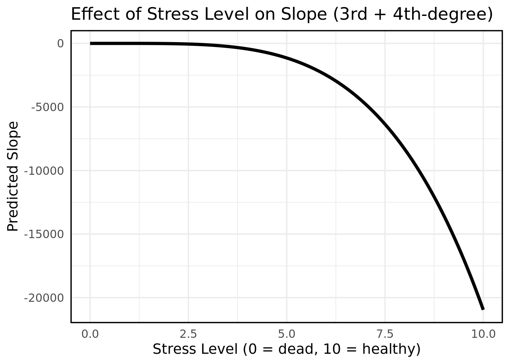
# LWC range (standardized, z-scores)
# We'll pick a reasonable range, e.g., -3 to +3 SD
lwc <- seq(-3, 3, by = 0.1)
# Coefficient and intercept
intercept <- 1.25 # from your model
lwc_coef <- -0.47
lwc_se <- 0.20
# Predicted Slope
predicted <- intercept + lwc_coef * lwc
# 95% CI
ci_upper <- predicted + 1.96 * lwc_se
ci_lower <- predicted - 1.96 * lwc_se
# Data frame
df <- data.frame(lwc = lwc, predicted = predicted,
ci_upper = ci_upper, ci_lower = ci_lower)
# Plot
ggplot(df, aes(x = lwc, y = predicted)) +
geom_ribbon(aes(ymin = ci_lower, ymax = ci_upper), fill = "pink", alpha = 0.4) +
geom_line(color = "black", size = 1.5) +
labs(
x = "z LWC (standardized leaf water content)",
y = "Predicted Slope",
title = "Effect of LWC on Slope"
) +
theme_minimal(base_size = 14)+
theme(
panel.border = element_rect(color = "black", fill = NA, linewidth = 1.2)
)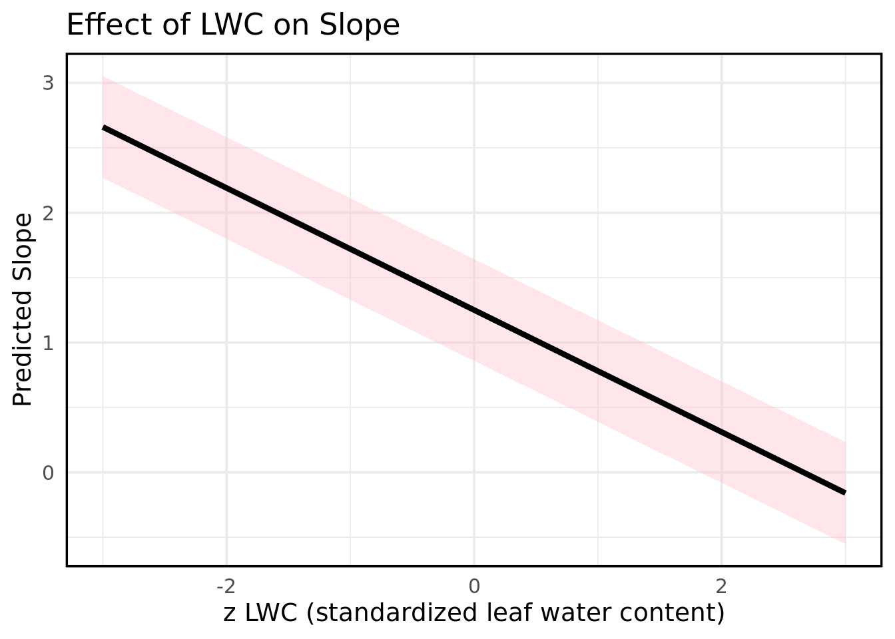
library(ggplot2)
# Create a data frame with species effects
species <- c("ABLA","JUMO","JUOS","PIED","PILE","PIPO","PIPU","PIST","PSME","QUEM","QUGA","QUHY")
estimate <- c(-1.11,-1.62,-4.19,-2.35,1.72,-3.58,0.19,-2.81,1.49,-6.85,-0.82,-1.47)
se <- c(2.16,1.46,1.18,1.65,2.08,0.97,1.16,1.07,0.96,1.47,1.10,1.37)
# Calculate 95% CI
ci_upper <- estimate + 1.96*se
ci_lower <- estimate - 1.96*se
# Identify significance
significant <- ifelse(ci_lower * ci_upper > 0, "Yes", "No")
# Data frame
df <- data.frame(species, estimate, ci_lower, ci_upper, significant)
# Reorder species by estimate for nicer plotting
df$species <- factor(df$species, levels = df$species[order(df$estimate)])
# Plot
ggplot(df, aes(x = estimate, y = species, color = significant)) +
geom_point(size = 3) +
geom_errorbarh(aes(xmin = ci_lower, xmax = ci_upper), height = 0.2) +
geom_vline(xintercept = 0, linetype = "dashed", color = "gray") +
scale_color_manual(values = c("Yes" = "pink", "No" = "black")) +
labs(
x = "Effect on TWD Slope (Estimate ± 95% CI)",
y = "Species code",
title = "Species Effects on TWD Slope"
) +
theme_minimal(base_size = 14)+
theme(
panel.border = element_rect(color = "black", fill = NA, linewidth = 1.2)
)Warning: `geom_errobarh()` was deprecated in ggplot2 4.0.0.
ℹ Please use the `orientation` argument of `geom_errorbar()` instead.`height` was translated to `width`.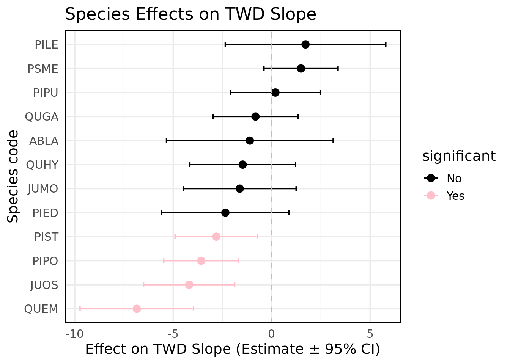
##model from model selection
#Check for assumption violations:
#- Homogeneity of residuals.
#- Normality.
#- Outliers.
plot(lme_final_2)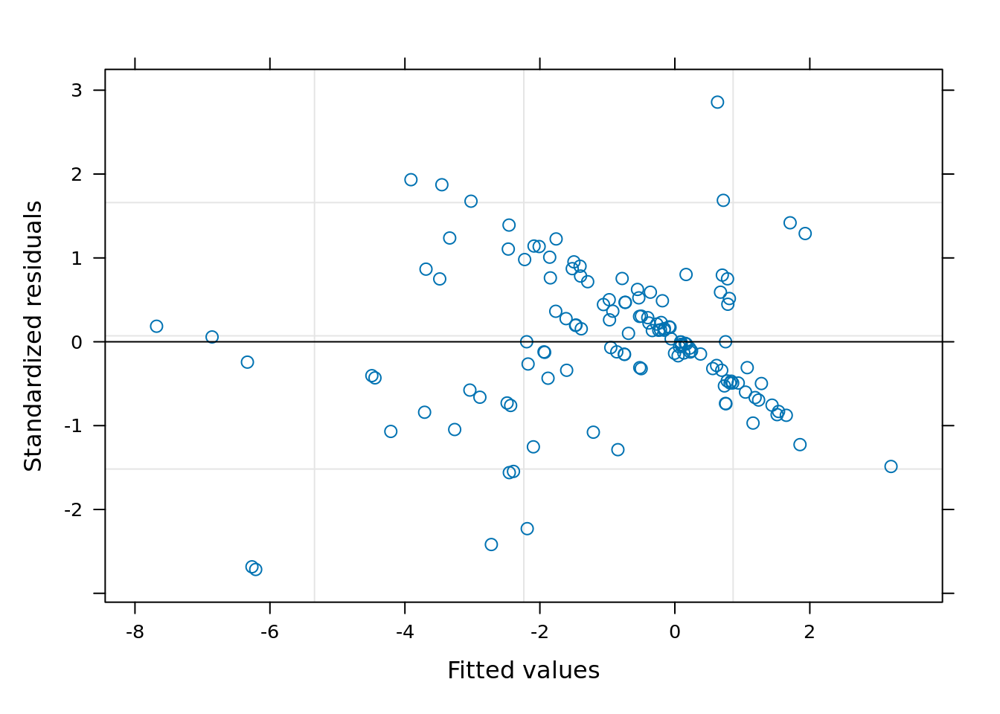
check_model(lme_final_2)Converting missing values (`NA`) into regular values currently not
possible for variables of class `NULL`.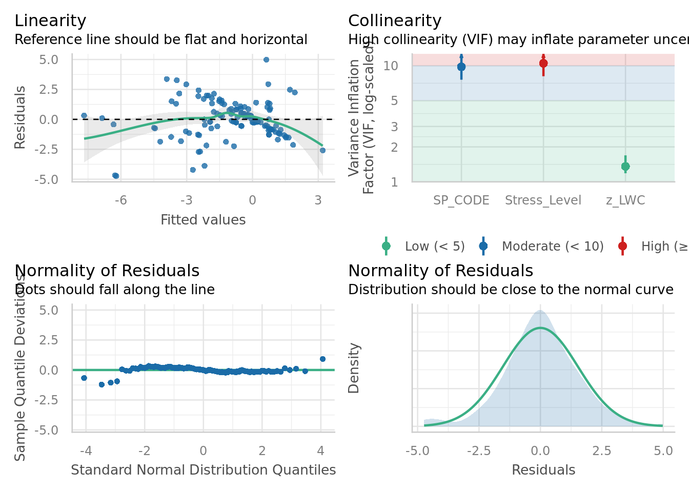